<title>Relief Themes Preview</title>
<meta name="claude:viewport-fit-sides" content="cover">
<link rel="stylesheet" href="https://fonts.googleapis.com/css2?family=Archivo:wdth,wght@75..125,400..800&family=Source+Serif+4:opsz,wght@8..60,400;8..60,600&display=swap">
<style>
/* Layout: a print-shop proof sheet — one row per theme, three mounted proofs, palette chips as spool labels. */
:root {
  --paper: #f3efe7; --ink: #1d1b17; --muted: #6b655b; --line: #d9d2c4; --card: #faf8f3; --accent: #c8451f;
  --display: "Archivo", "Helvetica Neue", Arial, sans-serif; --body: "Source Serif 4", Georgia, serif;
}
@media (prefers-color-scheme: dark) { :root:not([data-theme="light"]) { --paper: #15140f; --ink: #ece7dc; --muted: #a39c8f; --line: #312e27; --card: #1d1b16; --accent: #ff7b4d; color-scheme: dark } }
:root[data-theme="dark"] { --paper: #15140f; --ink: #ece7dc; --muted: #a39c8f; --line: #312e27; --card: #1d1b16; --accent: #ff7b4d; color-scheme: dark }
body { background: var(--paper); color: var(--ink); font: 17px/1.55 var(--body); padding-block: 2.5rem 4rem;
  padding-left: max(16px, env(safe-area-inset-left, 0px)); padding-right: max(16px, env(safe-area-inset-right, 0px)); }
main { max-width: 1180px; margin: 0 auto; display: grid; gap: 3rem; }
h1, h2, h3 { font-family: var(--display); text-wrap: balance; margin: 0; }
h1 { font-size: clamp(2rem, 4vw, 3rem); font-weight: 800; font-stretch: 90%; letter-spacing: -0.02em; line-height: 1.05; }
h2 { font-size: 1.5rem; font-weight: 700; font-stretch: 95%; }
h3 { font-size: 1.05rem; font-weight: 700; }
p { max-width: 68ch; margin: 0; }
.lede { font-size: 1.15rem; }
.eyebrow { font-family: var(--display); font-size: 0.75rem; letter-spacing: 0.12em; text-transform: uppercase; color: var(--muted); }
header { display: grid; gap: 1rem; }
.note { border-left: 3px solid var(--accent); padding-left: 1rem; color: var(--muted); font-size: 0.95rem; }
figure { margin: 0; display: grid; gap: 0.5rem; min-width: 0; }
figure img { width: 100%; height: auto; display: block; border-radius: 2px; box-shadow: 0 10px 30px rgba(0,0,0,0.18); }
figcaption { font-size: 0.85rem; color: var(--muted); font-family: var(--display); }
.pair { display: grid; grid-template-columns: repeat(auto-fit, minmax(300px, 1fr)); gap: 1.5rem; }
.theme { display: grid; gap: 1rem; padding-block: 2rem; border-top: 1px solid var(--line); }
.theme-head { display: flex; flex-wrap: wrap; gap: 1rem 2rem; align-items: baseline; justify-content: space-between; }
.chips { display: flex; flex-wrap: wrap; gap: 0.5rem; }
.chip { display: inline-flex; align-items: center; gap: 0.4rem; font-family: var(--display); font-size: 0.75rem; letter-spacing: 0.02em; color: var(--muted); }
.chip i { width: 18px; height: 18px; border-radius: 50%; border: 1px solid rgba(0,0,0,0.25); display: inline-block; }
.meta { font-family: var(--display); font-size: 0.8rem; color: var(--muted); display: flex; gap: 1.25rem; flex-wrap: wrap; }
.meta b { color: var(--ink); font-weight: 600; }
.trio { display: grid; grid-template-columns: repeat(auto-fit, minmax(240px, 1fr)); gap: 1.25rem; }
dl { display: grid; grid-template-columns: max-content 1fr; gap: 0.35rem 1rem; max-width: 68ch; font-size: 0.95rem; }
dt { font-family: var(--display); font-weight: 600; font-size: 0.85rem; }
dd { margin: 0; color: var(--muted); }
.toc { display: flex; flex-wrap: wrap; gap: 0.5rem 1.25rem; font-family: var(--display); font-size: 0.85rem; }
.toc a { color: var(--accent); text-decoration: none; border-bottom: 1px solid currentColor; }
.toc a:focus-visible, .toc a:hover { outline: 2px solid var(--accent); outline-offset: 3px; }
@media (prefers-reduced-motion: no-preference) { figure img { transition: transform 200ms ease } figure:hover img { transform: translateY(-2px) } }
</style>

<main>
<header>
  <div class="eyebrow">Activity Path Poster · proposal, 24 Oct 2026</div>
  <h1>Relief themes and a closer look at the ground</h1>
  <p class="lede">These are flat shaded mock-ups rendered from the real terrain and OpenStreetMap data for three test orders: the Zermatt trail run, the Zürich triathlon and a 5 km city run through the Altstadt. They show what each theme draws and in which colour. The printed relief is a 3D heightmap, so shading and the wall's height will read differently in PLA; the colours and the map content are what to judge here.</p>
  <p class="note">Every palette is a starting point to tune against the spools you actually buy. Themes are named by look, never by a race or brand: the marks (M-dot, UTMB, the Boston unicorn, the Strava logo) are trademarks, and the palettes are only inspired by them.</p>
  <nav class="toc" aria-label="Themes">
    <a href="#closer">Closer perspective</a><a href="#classic">Classic</a><a href="#city_marathon">City marathon</a><a href="#dark_orange">Dark · orange</a><a href="#alpine_hiking">Alpine hiking</a><a href="#alpine_winter">Alpine winter</a><a href="#triathlon">Triathlon</a><a href="#grand_tour">Grand tour</a><a href="#trail_slate">Trail · slate</a><a href="#mono_dark">Dark mode</a><a href="#forest">Forest</a><a href="#more">22 more directions</a>
  </nav>
</header>

<section id="closer" class="theme">
  <div class="eyebrow">Part 1 · the perspective</div>
  <h2>Streets, trails and the railway appear when the route is short</h2>
  <p>Today the relief fetches only main roads (tertiary and up), water and the grey band above 2000 m, whatever the zoom. On a 7 km box that is a satellite view. The proposal adds finer map classes as the ground scale gets closer: village streets below about 35 m per printed mm, signposted hiking routes below 40, railways below 150, buildings as small raised blocks below 12. Zermatt sits at 33 m/mm, so it gains streets, the yellow hiking network and the Gornergrat line; it is still too far out for buildings. The city 5K at 8.5 m/mm gets everything.</p>
  <div class="pair">
    <figure>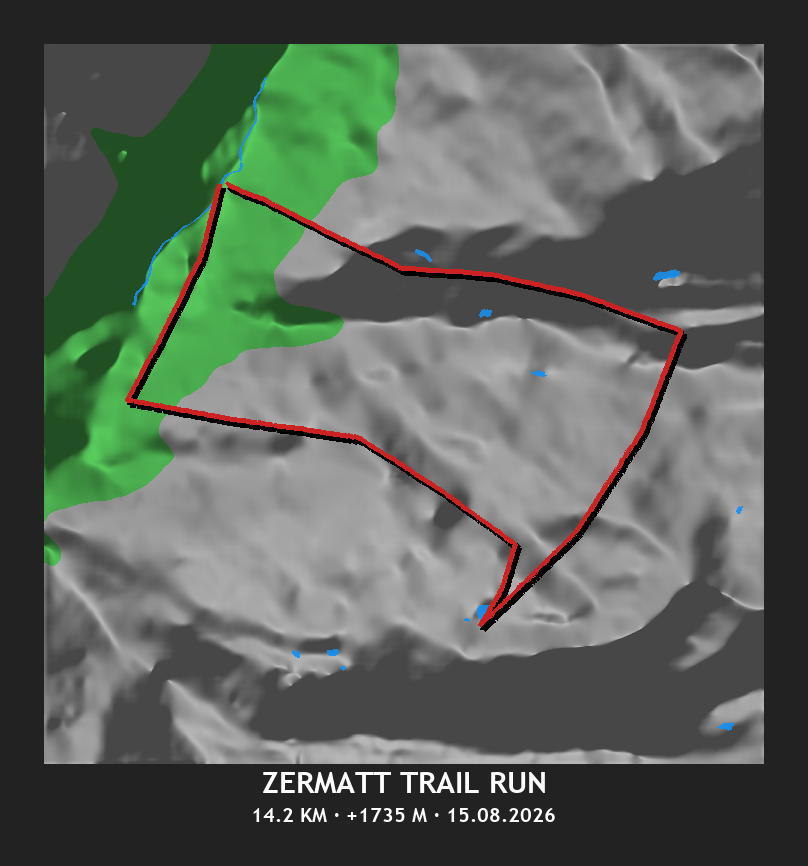<figcaption>Today · classic theme, main roads only</figcaption></figure>
    <figure>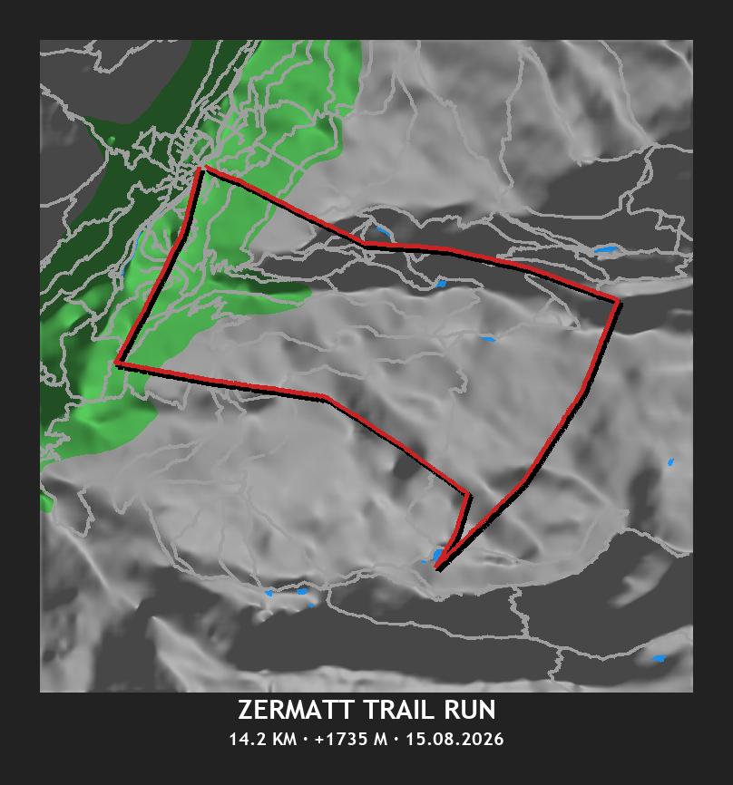<figcaption>Proposed · same theme, close-up detail switched on</figcaption></figure>
  </div>
  <h3>The web preview looks from lower down</h3>
  <p>The three.js preview currently sits high above the poster. The proposal fits the camera to the poster size, at about 35° above the table, with a warm raking key light from the upper left, the way a wall lamp hits it. These two images only sketch the angle change.</p>
  <div class="pair">
    <figure>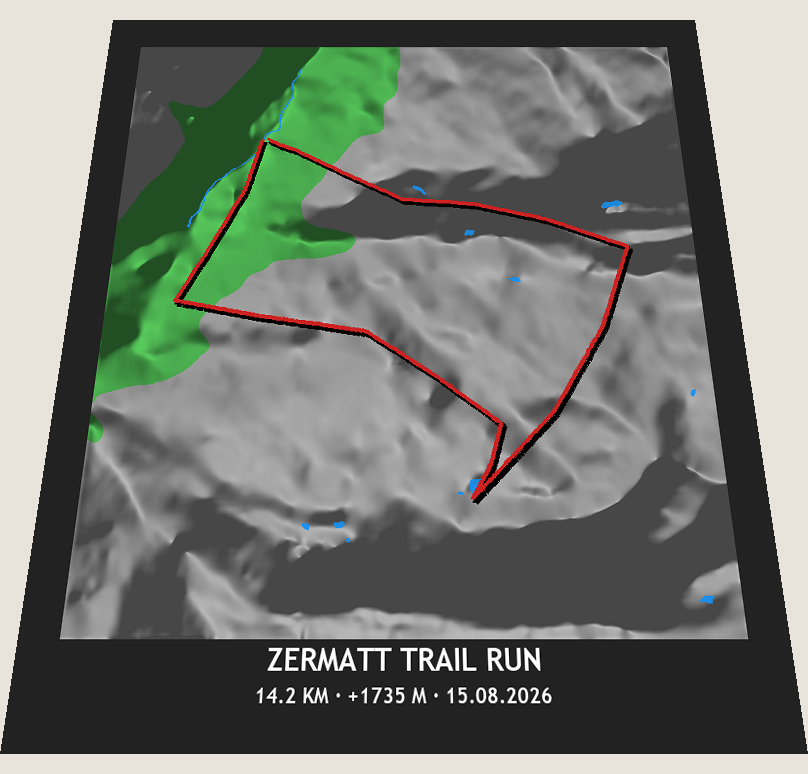<figcaption>Today · steep angle from above</figcaption></figure>
    <figure>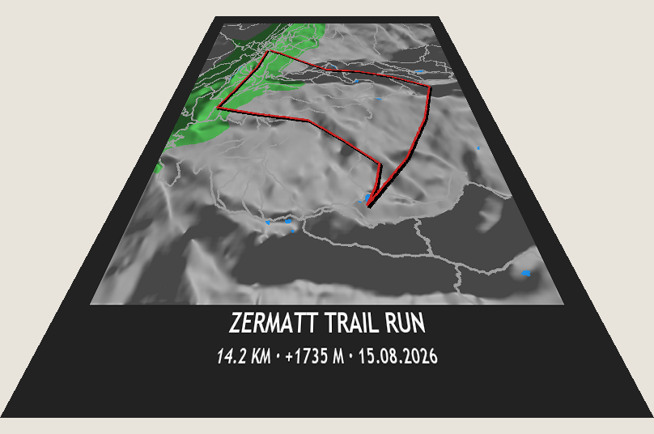<figcaption>Proposed · 35° elevation, fitted to the poster</figcaption></figure>
  </div>
  <dl>
    <dt>Density cap</dt><dd>The existing rule stays: while detail covers more than 15 % of the plate the finest class is dropped first (streets, then trails). Trails mean ways on a signposted hiking route, not every footpath; at Zermatt every footpath turned the plate yellow.</dd>
    <dt>Line width</dt><dd>All detail prints at 1.2 mm (three extrusions). A thinner trail would fall under the 0.84 mm colour floor and merge into the ground.</dd>
    <dt>Buildings</dt><dd>A two-layer roof (0.48 mm) in the detail colour, so the wall stands on the roofs. A 15 m house is 0.4 mm at Zermatt's scale, under the floor, which is why they appear only on boxes under about 2.5 km.</dd>
  </dl>
</section>

<div class="eyebrow">Part 2 · the themes</div>

<section id="classic" class="theme">
  <div class="theme-head"><h2>Classic green terrain</h2><div class="meta"><span>Relief <b>3 slots</b></span><span>Draws <b>main roads</b></span></div></div>
  <p>What the shop prints today. Green land, blue water, grey above the snow line, main roads in the same grey. Three slots. Byte-identical output stays the default.</p>
  <div class="chips"><span class="chip"><i style="background:#222222"></i>frame #222222</span><span class="chip"><i style="background:#FFFFFF"></i>caption #FFFFFF</span><span class="chip"><i style="background:#4CAF50"></i>land #4CAF50</span><span class="chip"><i style="background:#2196F3"></i>water #2196F3</span><span class="chip"><i style="background:#9E9E9E"></i>high band #9E9E9E</span><span class="chip"><i style="background:#CC2222"></i>route #CC2222</span></div>
  <div class="trio">
    <figure><figcaption>Zermatt trail run · 7 km box · 33 m/mm</figcaption></figure>
    <figure>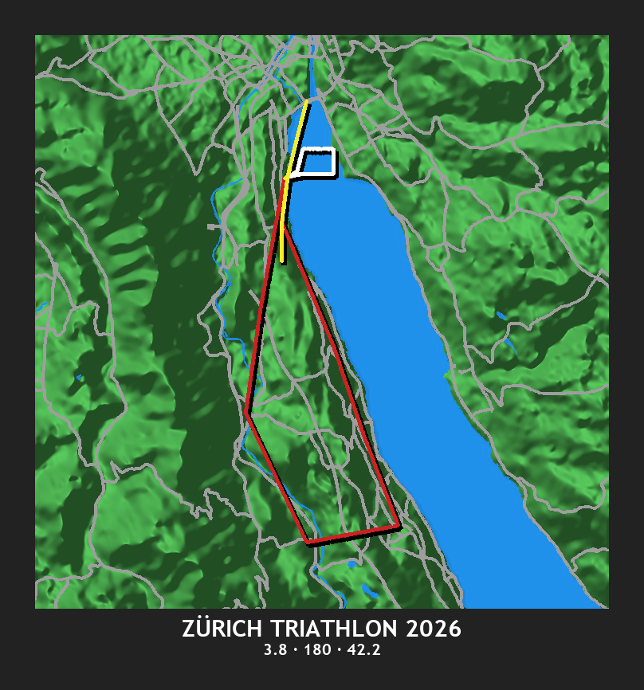<figcaption>Zürich triathlon · 12 km box · 58 m/mm</figcaption></figure>
    <figure>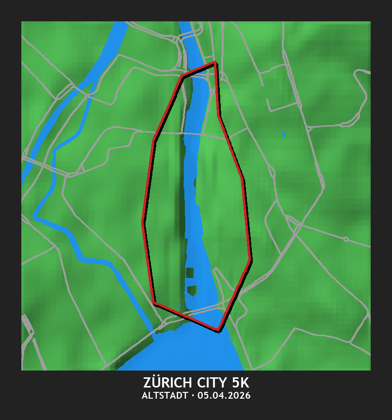<figcaption>Zürich city 5K · 1.8 km box · 8.5 m/mm</figcaption></figure>
  </div>
</section>
<section id="city_marathon" class="theme">
  <div class="theme-head"><h2>City marathon — asphalt</h2><div class="meta"><span>Relief <b>3 slots</b></span><span>Draws <b>main roads · buildings (under 2.5 km) · rail</b></span></div></div>
  <p>Pale asphalt land, no snow band, buildings as dark raised blocks. The streets emerge as the gaps between the blocks, so the route reads like a city map. Route wall in the event's colour, red here.</p>
  <div class="chips"><span class="chip"><i style="background:#222222"></i>frame #222222</span><span class="chip"><i style="background:#FFFFFF"></i>caption #FFFFFF</span><span class="chip"><i style="background:#CFCBC2"></i>land #CFCBC2</span><span class="chip"><i style="background:#3F8FD2"></i>water #3F8FD2</span><span class="chip"><i style="background:#4A4A4A"></i>streets & trails #4A4A4A</span><span class="chip"><i style="background:#E53935"></i>route #E53935</span></div>
  <div class="trio">
    <figure>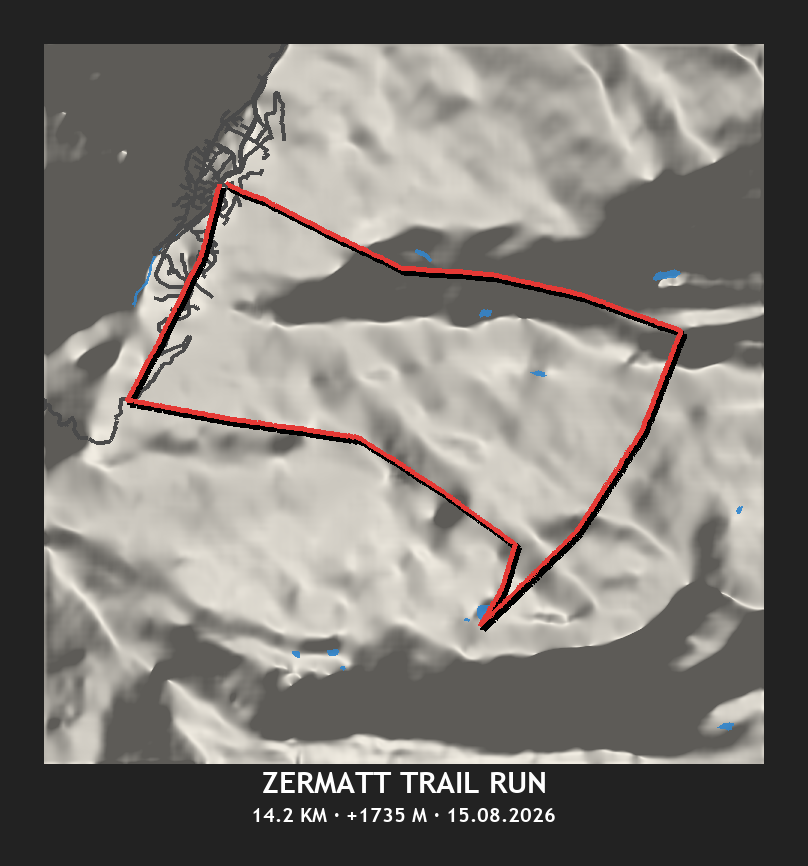<figcaption>Zermatt trail run · 7 km box · 33 m/mm</figcaption></figure>
    <figure>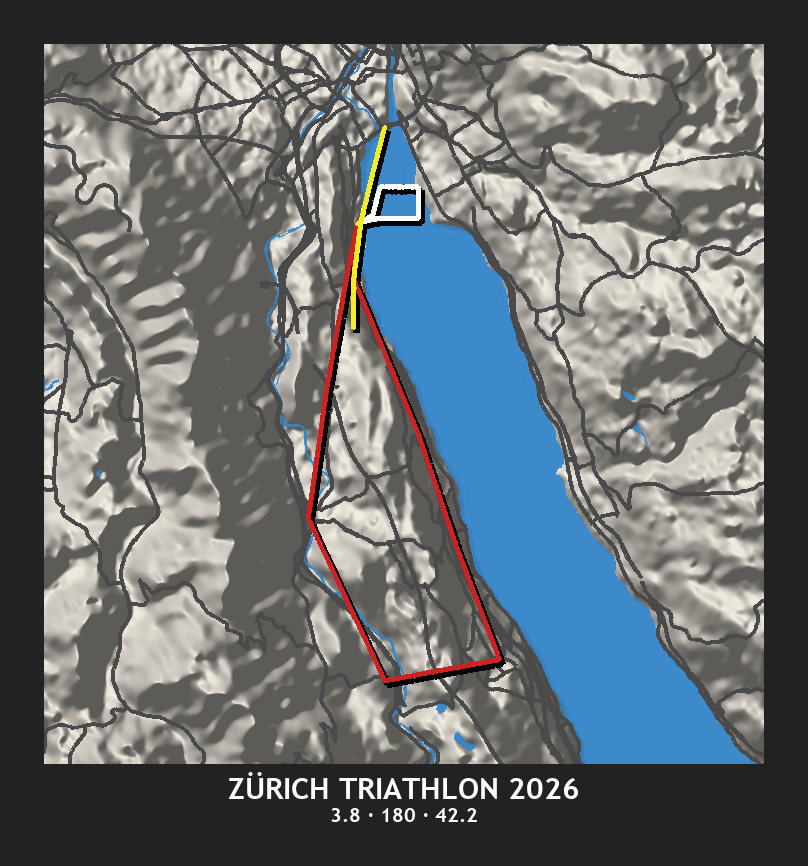<figcaption>Zürich triathlon · 12 km box · 58 m/mm</figcaption></figure>
    <figure>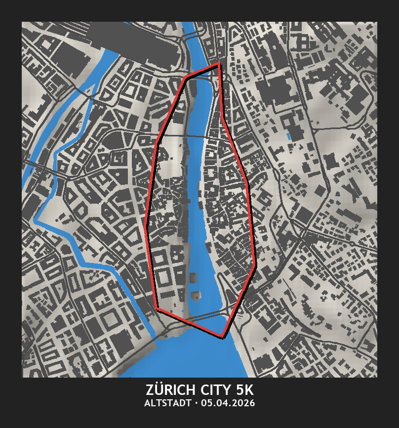<figcaption>Zürich city 5K · 1.8 km box · 8.5 m/mm</figcaption></figure>
  </div>
</section>
<section id="dark_orange" class="theme">
  <div class="theme-head"><h2>Dark terrain — orange route</h2><div class="meta"><span>Relief <b>3 slots</b></span><span>Draws <b>main roads · streets · hiking routes</b></span></div></div>
  <p>Near-black land with a muted blue for water and grey streets; the orange route and caption carry the poster. Inspired by the tracker-app look.</p>
  <div class="chips"><span class="chip"><i style="background:#111111"></i>frame #111111</span><span class="chip"><i style="background:#FC4C02"></i>caption #FC4C02</span><span class="chip"><i style="background:#2B2B2B"></i>land #2B2B2B</span><span class="chip"><i style="background:#355C7D"></i>water #355C7D</span><span class="chip"><i style="background:#6E6E6E"></i>streets & trails #6E6E6E</span><span class="chip"><i style="background:#FC4C02"></i>route #FC4C02</span></div>
  <div class="trio">
    <figure>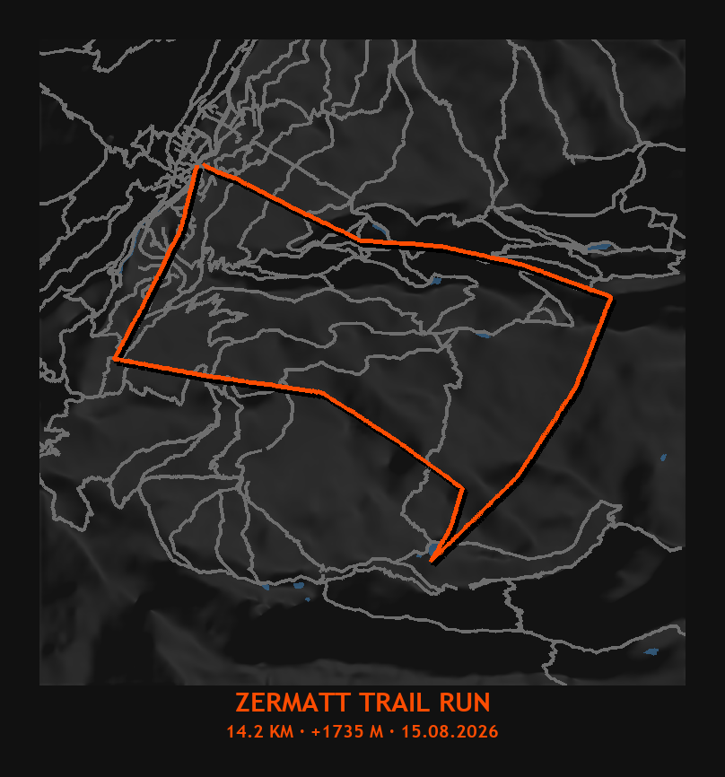<figcaption>Zermatt trail run · 7 km box · 33 m/mm</figcaption></figure>
    <figure>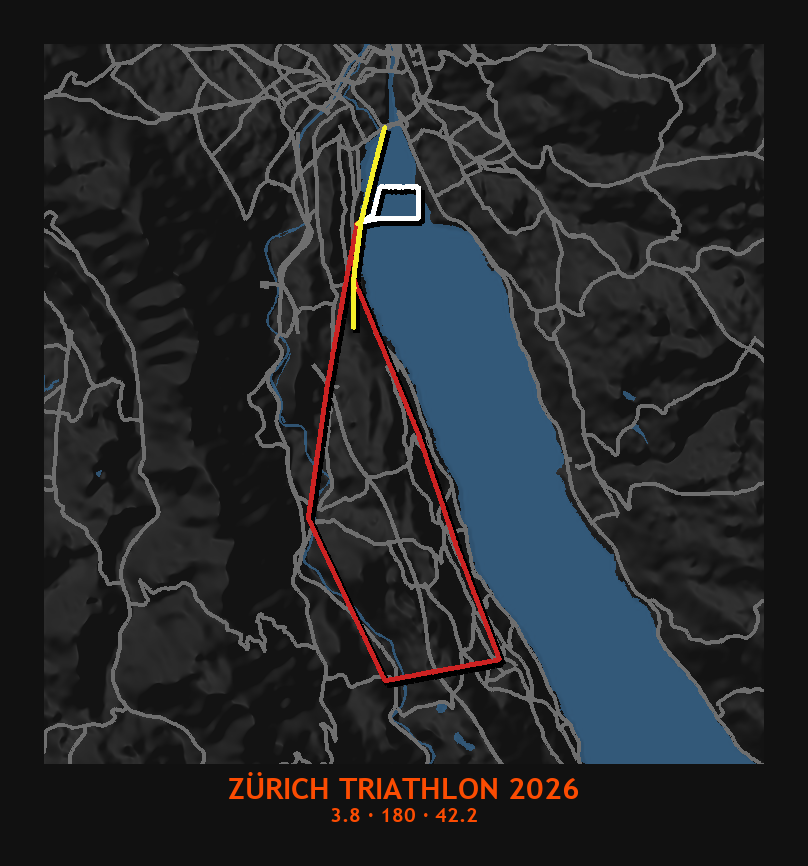<figcaption>Zürich triathlon · 12 km box · 58 m/mm</figcaption></figure>
    <figure>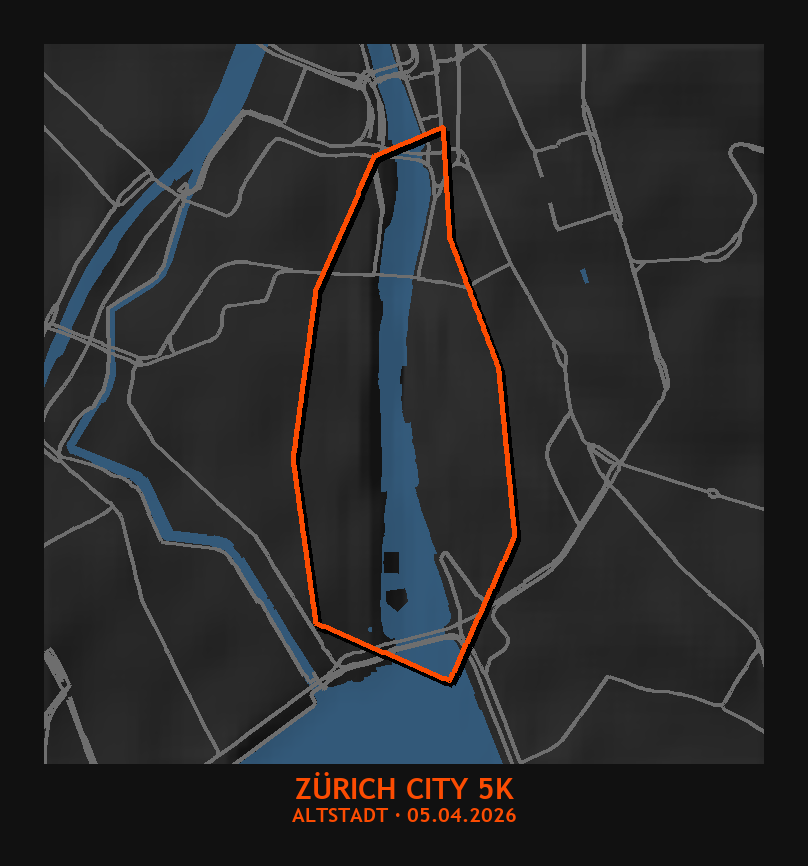<figcaption>Zürich city 5K · 1.8 km box · 8.5 m/mm</figcaption></figure>
  </div>
</section>
<section id="alpine_hiking" class="theme">
  <div class="theme-head"><h2>Alpine hiking — signpost-yellow trails</h2><div class="meta"><span>Relief <b>4 slots</b></span><span>Draws <b>main roads · streets · hiking routes · rail</b></span></div></div>
  <p>For Swiss customers: swisstopo-like pale green below the tree line, a brown-grey alpine band above 2000 m, water in map blue, and the signposted hiking network in the Wanderweg yellow of the trail posts. Dark wood frame, red route.</p>
  <div class="chips"><span class="chip"><i style="background:#3E2A1E"></i>frame #3E2A1E</span><span class="chip"><i style="background:#FFFFFF"></i>caption #FFFFFF</span><span class="chip"><i style="background:#CFE3B4"></i>land #CFE3B4</span><span class="chip"><i style="background:#6FA8DC"></i>water #6FA8DC</span><span class="chip"><i style="background:#B9A58B"></i>high band #B9A58B</span><span class="chip"><i style="background:#FFCC00"></i>streets & trails #FFCC00</span><span class="chip"><i style="background:#D62828"></i>route #D62828</span></div>
  <div class="trio">
    <figure>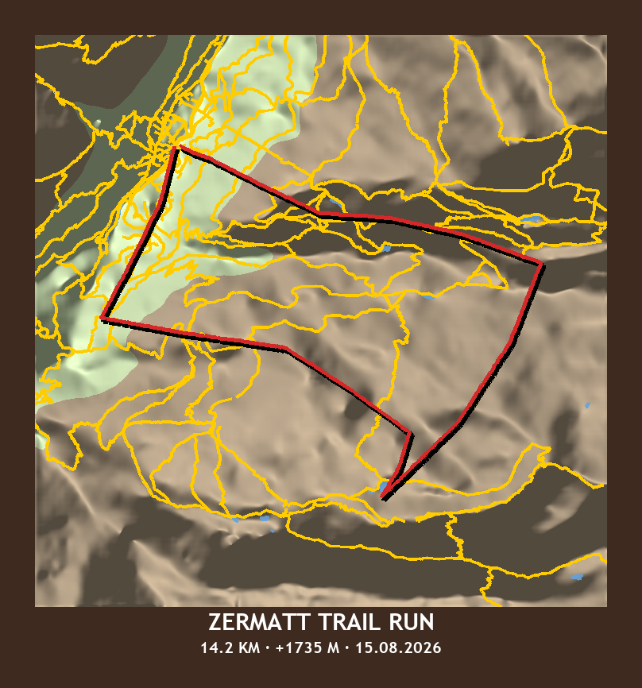<figcaption>Zermatt trail run · 7 km box · 33 m/mm</figcaption></figure>
    <figure>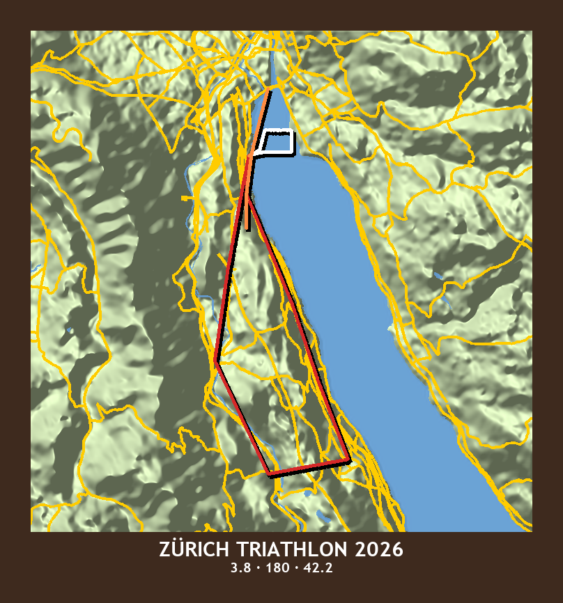<figcaption>Zürich triathlon · 12 km box · 58 m/mm</figcaption></figure>
    <figure>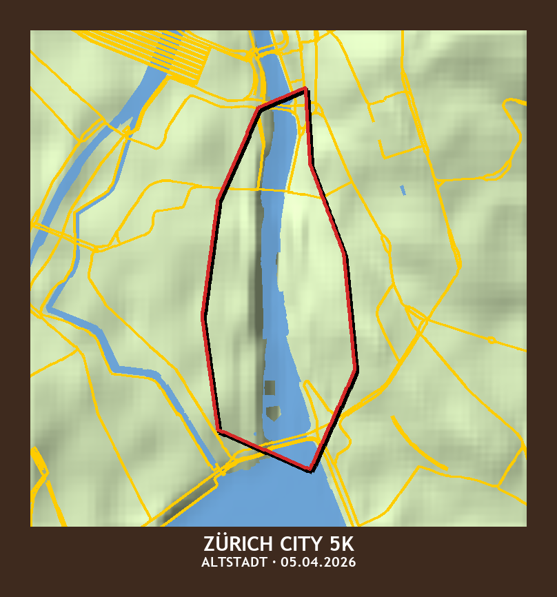<figcaption>Zürich city 5K · 1.8 km box · 8.5 m/mm</figcaption></figure>
  </div>
</section>
<section id="alpine_winter" class="theme">
  <div class="theme-head"><h2>Alpine winter — snow and slate</h2><div class="meta"><span>Relief <b>4 slots</b></span><span>Draws <b>main roads · streets · hiking routes</b></span></div></div>
  <p>Cold blue-grey land, white above the snow line, slate streets, a night-blue frame. For winter trail, ski-touring and open-water swims.</p>
  <div class="chips"><span class="chip"><i style="background:#1A1A2E"></i>frame #1A1A2E</span><span class="chip"><i style="background:#FFFFFF"></i>caption #FFFFFF</span><span class="chip"><i style="background:#B8C7D6"></i>land #B8C7D6</span><span class="chip"><i style="background:#4A90C2"></i>water #4A90C2</span><span class="chip"><i style="background:#FFFFFF"></i>high band #FFFFFF</span><span class="chip"><i style="background:#4B5563"></i>streets & trails #4B5563</span><span class="chip"><i style="background:#E63946"></i>route #E63946</span></div>
  <div class="trio">
    <figure>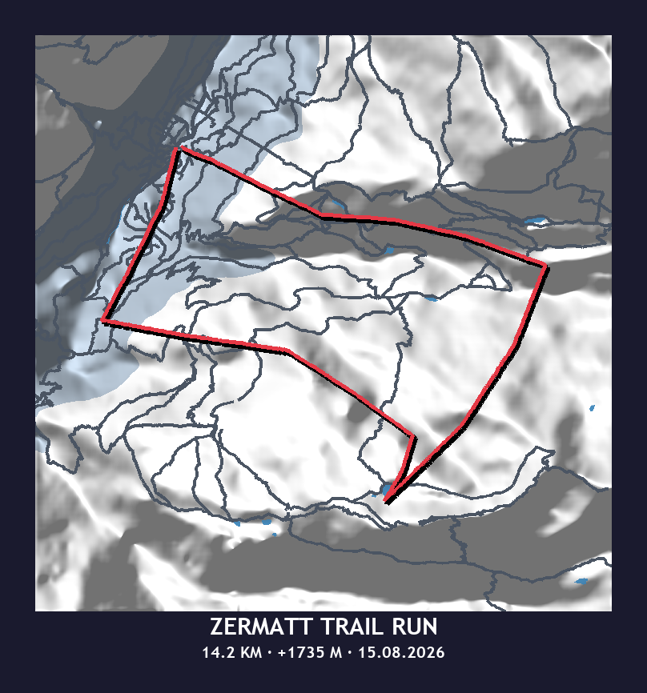<figcaption>Zermatt trail run · 7 km box · 33 m/mm</figcaption></figure>
    <figure>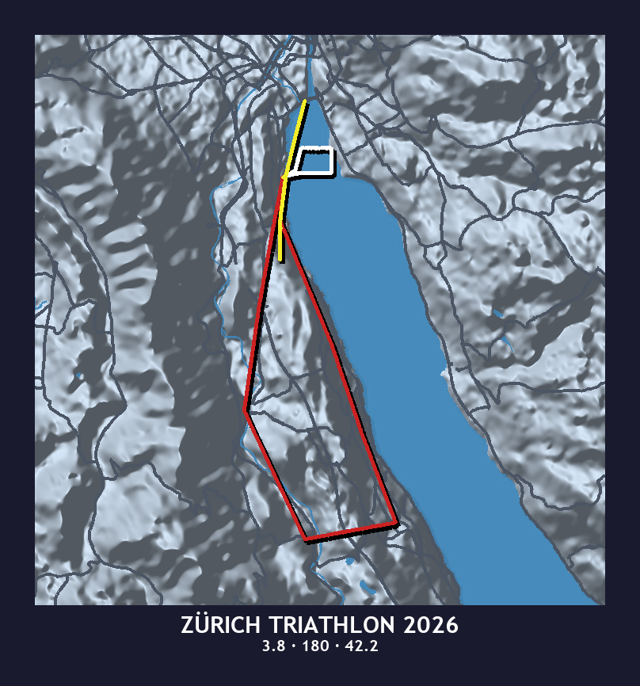<figcaption>Zürich triathlon · 12 km box · 58 m/mm</figcaption></figure>
    <figure>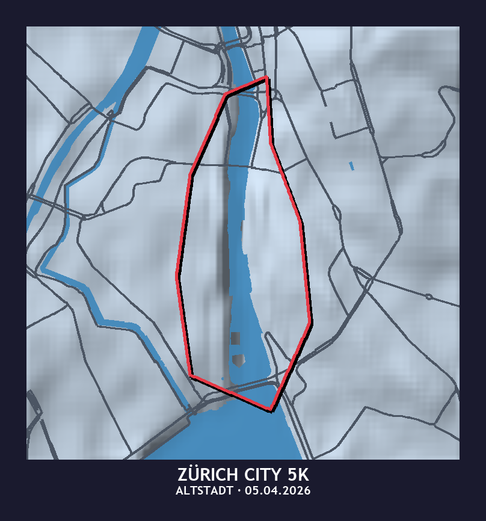<figcaption>Zürich city 5K · 1.8 km box · 8.5 m/mm</figcaption></figure>
  </div>
</section>
<section id="triathlon" class="theme">
  <div class="theme-head"><h2>Triathlon — red/black</h2><div class="meta"><span>Relief <b>3 slots</b></span><span>Draws <b>main roads · streets</b></span></div></div>
  <p>Black frame, dark land, a cool blue lake and grey peaks; the three legs print white, red and gold. Inspired by the long-distance triathlon look.</p>
  <div class="chips"><span class="chip"><i style="background:#111111"></i>frame #111111</span><span class="chip"><i style="background:#FFFFFF"></i>caption #FFFFFF</span><span class="chip"><i style="background:#2B2B2B"></i>land #2B2B2B</span><span class="chip"><i style="background:#2A6FB5"></i>water #2A6FB5</span><span class="chip"><i style="background:#666666"></i>high band #666666</span><span class="chip"><i style="background:#ED1C24"></i>route #ED1C24</span><span class="chip"><i style="background:#FFFFFF"></i>swim leg #FFFFFF</span><span class="chip"><i style="background:#FFC300"></i>run leg #FFC300</span></div>
  <div class="trio">
    <figure>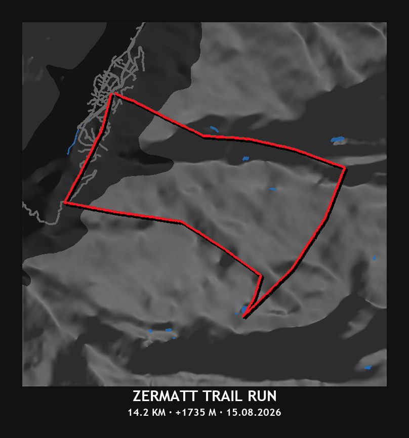<figcaption>Zermatt trail run · 7 km box · 33 m/mm</figcaption></figure>
    <figure>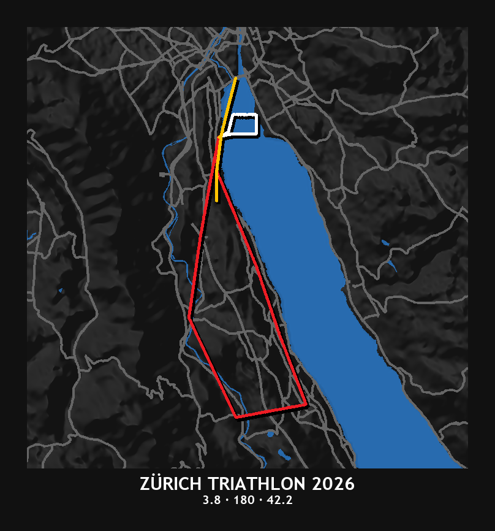<figcaption>Zürich triathlon · 12 km box · 58 m/mm</figcaption></figure>
    <figure>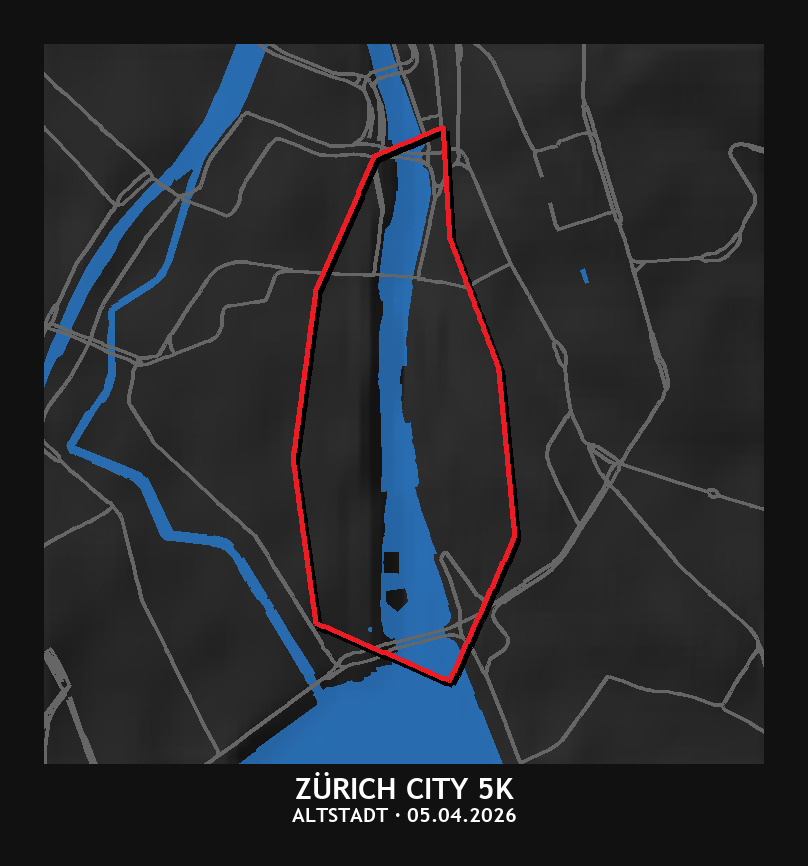<figcaption>Zürich city 5K · 1.8 km box · 8.5 m/mm</figcaption></figure>
  </div>
</section>
<section id="grand_tour" class="theme">
  <div class="theme-head"><h2>Grand-tour cycling — yellow/pink/red</h2><div class="meta"><span>Relief <b>4 slots</b></span><span>Draws <b>main roads · streets</b></span></div></div>
  <p>Olive land with the classic blue and grey, dark streets, and a route in leader-jersey yellow. Triathlon legs take white, pink and red.</p>
  <div class="chips"><span class="chip"><i style="background:#222222"></i>frame #222222</span><span class="chip"><i style="background:#FFFFFF"></i>caption #FFFFFF</span><span class="chip"><i style="background:#6B8E23"></i>land #6B8E23</span><span class="chip"><i style="background:#2196F3"></i>water #2196F3</span><span class="chip"><i style="background:#9E9E9E"></i>high band #9E9E9E</span><span class="chip"><i style="background:#4A4A4A"></i>streets & trails #4A4A4A</span><span class="chip"><i style="background:#FFD400"></i>route #FFD400</span></div>
  <div class="trio">
    <figure>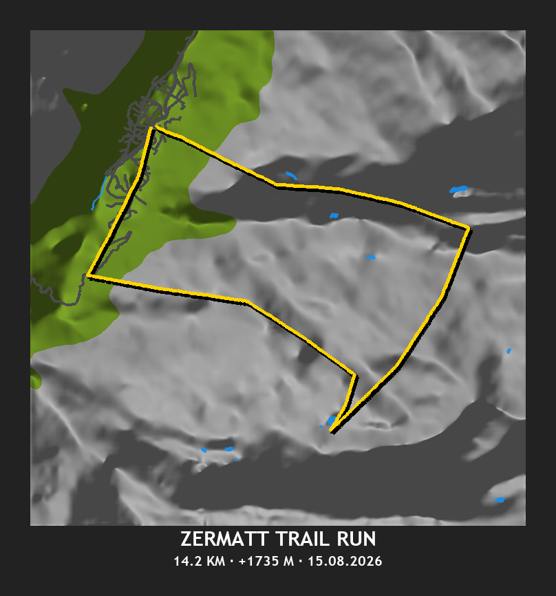<figcaption>Zermatt trail run · 7 km box · 33 m/mm</figcaption></figure>
    <figure>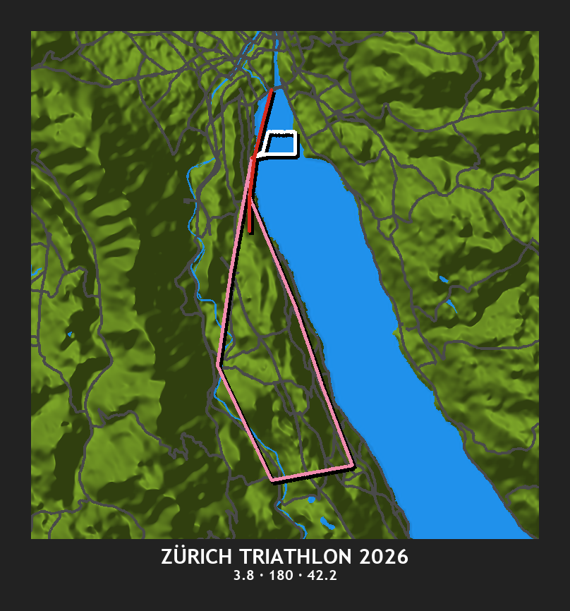<figcaption>Zürich triathlon · 12 km box · 58 m/mm</figcaption></figure>
    <figure>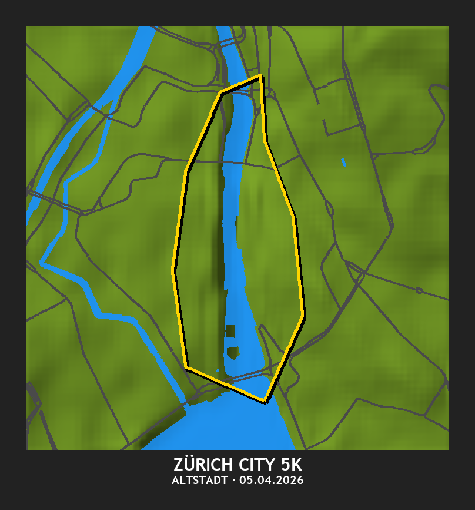<figcaption>Zürich city 5K · 1.8 km box · 8.5 m/mm</figcaption></figure>
  </div>
</section>
<section id="trail_slate" class="theme">
  <div class="theme-head"><h2>Trail / ultra — slate and amber</h2><div class="meta"><span>Relief <b>4 slots</b></span><span>Draws <b>main roads · streets · hiking routes</b></span></div></div>
  <p>Slate land, a lighter slate band, pale streets and trails, and an amber route. The mountain-ultra look.</p>
  <div class="chips"><span class="chip"><i style="background:#1C1F26"></i>frame #1C1F26</span><span class="chip"><i style="background:#FFFFFF"></i>caption #FFFFFF</span><span class="chip"><i style="background:#4F5B66"></i>land #4F5B66</span><span class="chip"><i style="background:#2F6690"></i>water #2F6690</span><span class="chip"><i style="background:#8A949E"></i>high band #8A949E</span><span class="chip"><i style="background:#E0E0E0"></i>streets & trails #E0E0E0</span><span class="chip"><i style="background:#F2C14E"></i>route #F2C14E</span></div>
  <div class="trio">
    <figure>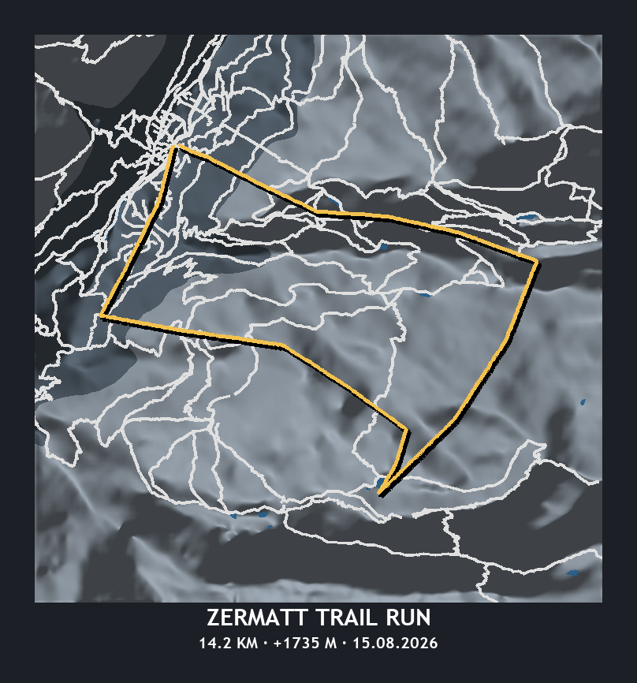<figcaption>Zermatt trail run · 7 km box · 33 m/mm</figcaption></figure>
    <figure>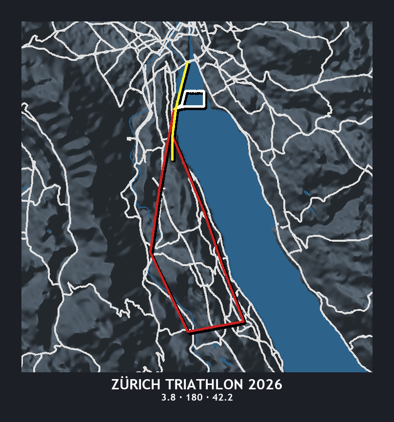<figcaption>Zürich triathlon · 12 km box · 58 m/mm</figcaption></figure>
    <figure>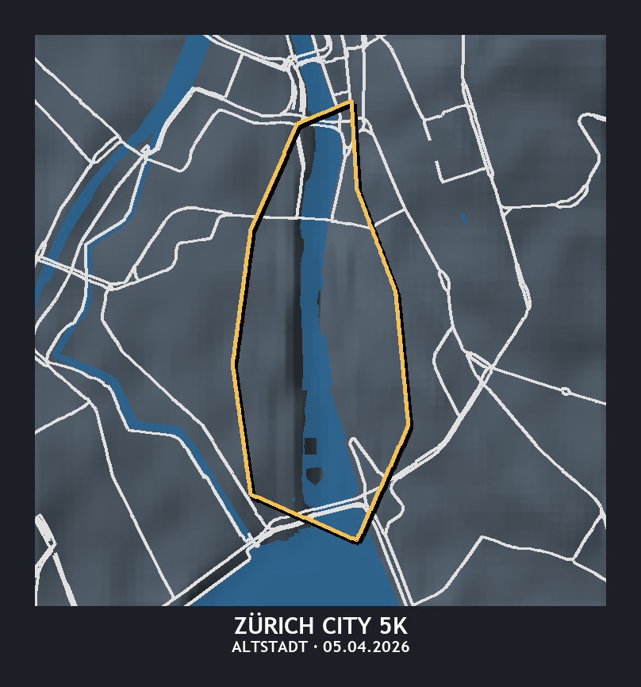<figcaption>Zürich city 5K · 1.8 km box · 8.5 m/mm</figcaption></figure>
  </div>
</section>
<section id="mono_dark" class="theme">
  <div class="theme-head"><h2>Dark mode — one accent</h2><div class="meta"><span>Relief <b>3 slots</b></span><span>Draws <b>main roads · streets</b></span></div></div>
  <p>Everything near-black except water in deep blue and a single bright accent for the route. Swap the accent per order.</p>
  <div class="chips"><span class="chip"><i style="background:#111111"></i>frame #111111</span><span class="chip"><i style="background:#FFFFFF"></i>caption #FFFFFF</span><span class="chip"><i style="background:#1E1E1E"></i>land #1E1E1E</span><span class="chip"><i style="background:#2C3E50"></i>water #2C3E50</span><span class="chip"><i style="background:#3A3A3A"></i>streets & trails #3A3A3A</span><span class="chip"><i style="background:#00E5A0"></i>route #00E5A0</span></div>
  <div class="trio">
    <figure>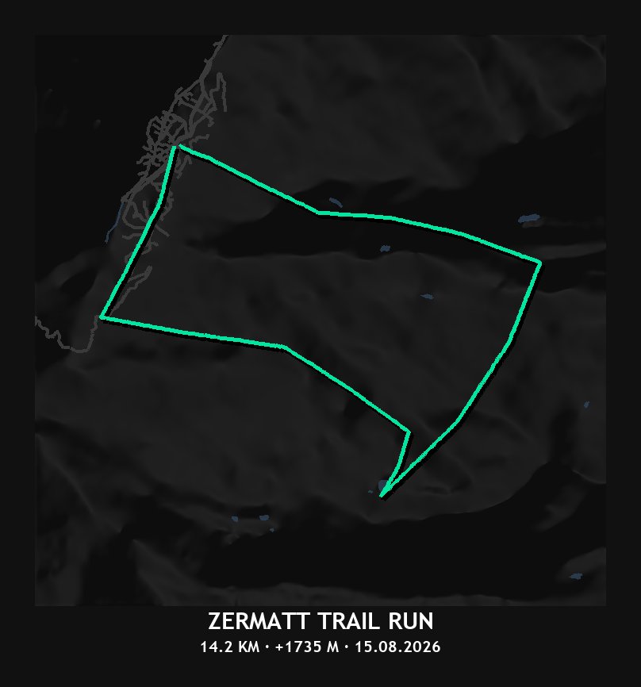<figcaption>Zermatt trail run · 7 km box · 33 m/mm</figcaption></figure>
    <figure>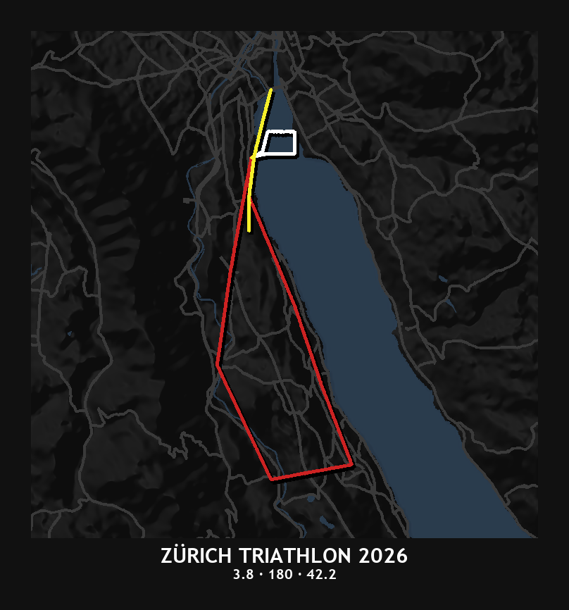<figcaption>Zürich triathlon · 12 km box · 58 m/mm</figcaption></figure>
    <figure>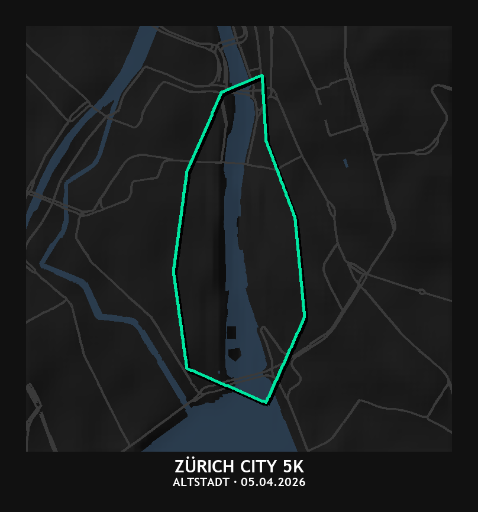<figcaption>Zürich city 5K · 1.8 km box · 8.5 m/mm</figcaption></figure>
  </div>
</section>
<section id="forest" class="theme">
  <div class="theme-head"><h2>Forest — deep greens</h2><div class="meta"><span>Relief <b>4 slots</b></span><span>Draws <b>main roads · streets · hiking routes</b></span></div></div>
  <p>Deep forest green with a pale band above the tree line, warm-sand trails and an orange route; a cream caption on a dark green frame.</p>
  <div class="chips"><span class="chip"><i style="background:#1B2A1B"></i>frame #1B2A1B</span><span class="chip"><i style="background:#F4EAD5"></i>caption #F4EAD5</span><span class="chip"><i style="background:#2F5D3A"></i>land #2F5D3A</span><span class="chip"><i style="background:#5B9BD5"></i>water #5B9BD5</span><span class="chip"><i style="background:#C9D1C8"></i>high band #C9D1C8</span><span class="chip"><i style="background:#D9B36B"></i>streets & trails #D9B36B</span><span class="chip"><i style="background:#FF8C42"></i>route #FF8C42</span></div>
  <div class="trio">
    <figure>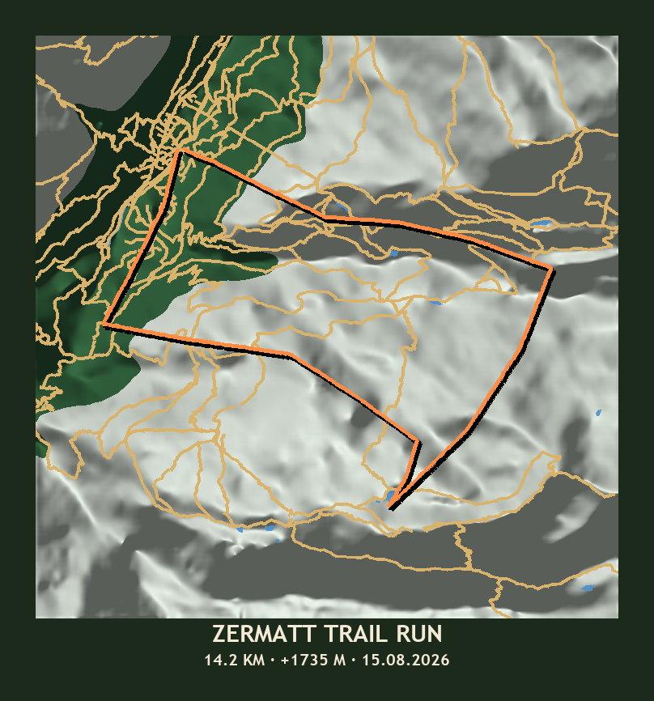<figcaption>Zermatt trail run · 7 km box · 33 m/mm</figcaption></figure>
    <figure>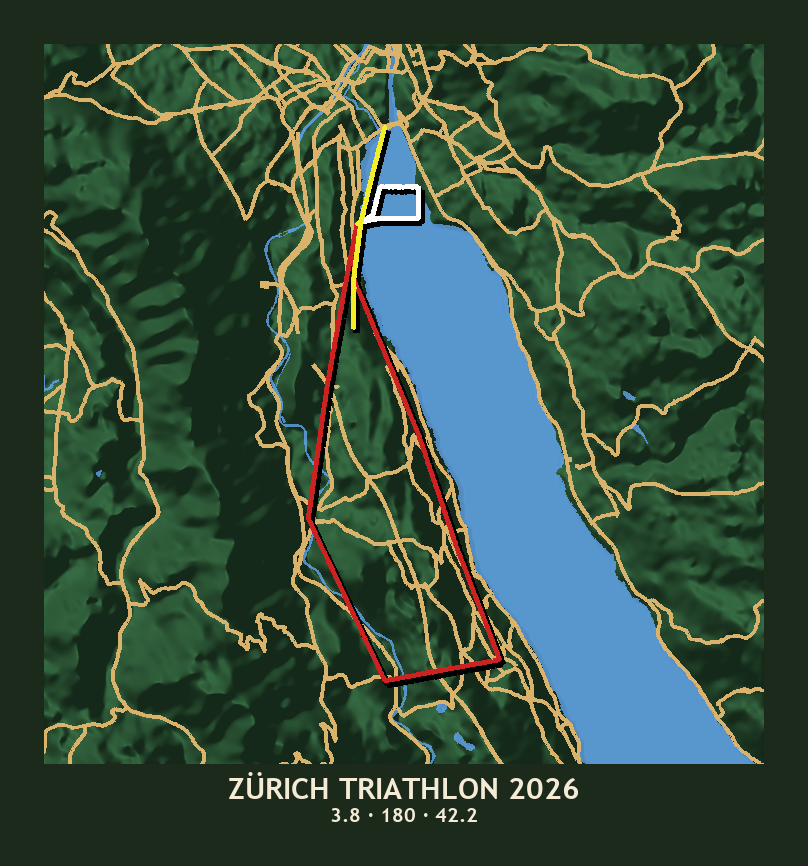<figcaption>Zürich triathlon · 12 km box · 58 m/mm</figcaption></figure>
    <figure>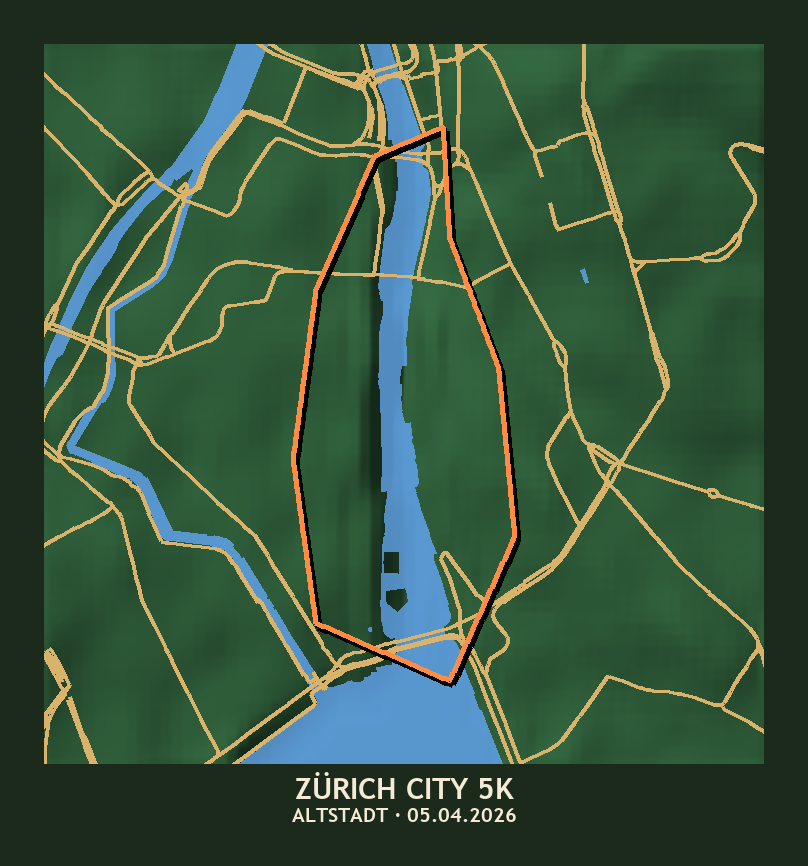<figcaption>Zürich city 5K · 1.8 km box · 8.5 m/mm</figcaption></figure>
  </div>
</section>

<div class="eyebrow" id="more">Part 3 · more directions</div>
<section class="theme"><h2>Twenty-two more palettes, from rooms, workshops, landscapes and race kit</h2><p>The first ten follow the events. These follow the places the poster will hang and the materials it sits beside. All are rendered on the same three test orders; slot counts and draw rules work the same way, and every hex is a starting point for the spools you choose.</p></section>
<section class="theme" id="rooms"><div class="eyebrow">Rooms</div><p>What people hang next to oak floors, linen sofas and white walls. Quiet land colours, the route as the single strong line.</p></section>
<section id="scandi_oak" class="theme"><div class="theme-head"><h2>Scandinavian — oak and linen</h2><div class="meta"><span>Relief <b>4 slots</b></span><span>Draws <b>main roads · streets · trails</b></span></div></div><p>Oak frame, linen land, dusty-blue water, a muted taupe band and ink-blue route. The quietest of the set.</p><div class="chips"><span class="chip"><i style="background:#C9A97A"></i>frame #C9A97A</span><span class="chip"><i style="background:#2B2B2B"></i>caption #2B2B2B</span><span class="chip"><i style="background:#EFE9DD"></i>land #EFE9DD</span><span class="chip"><i style="background:#9DB8C8"></i>water #9DB8C8</span><span class="chip"><i style="background:#D8D1C3"></i>high band #D8D1C3</span><span class="chip"><i style="background:#8C8577"></i>streets & trails #8C8577</span><span class="chip"><i style="background:#2F3A45"></i>route #2F3A45</span></div><div class="trio"><figure>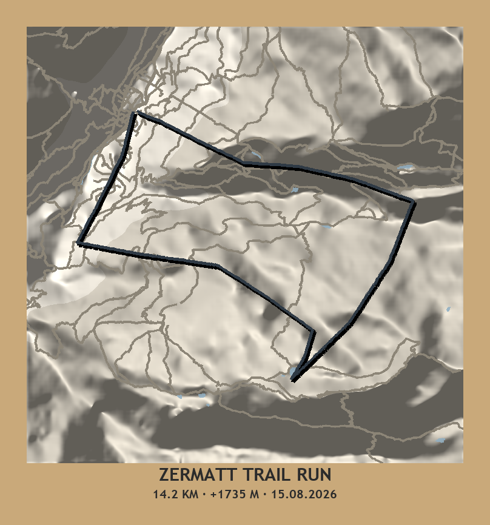<figcaption>Zermatt trail run · 33 m/mm</figcaption></figure><figure>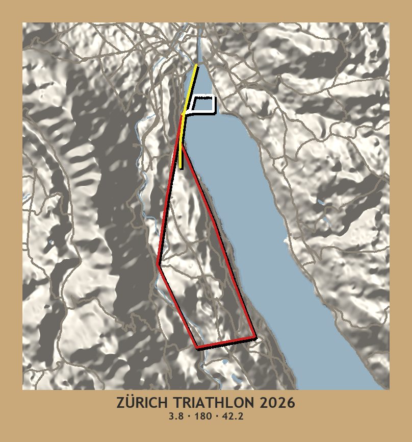<figcaption>Zürich triathlon · 58 m/mm</figcaption></figure><figure>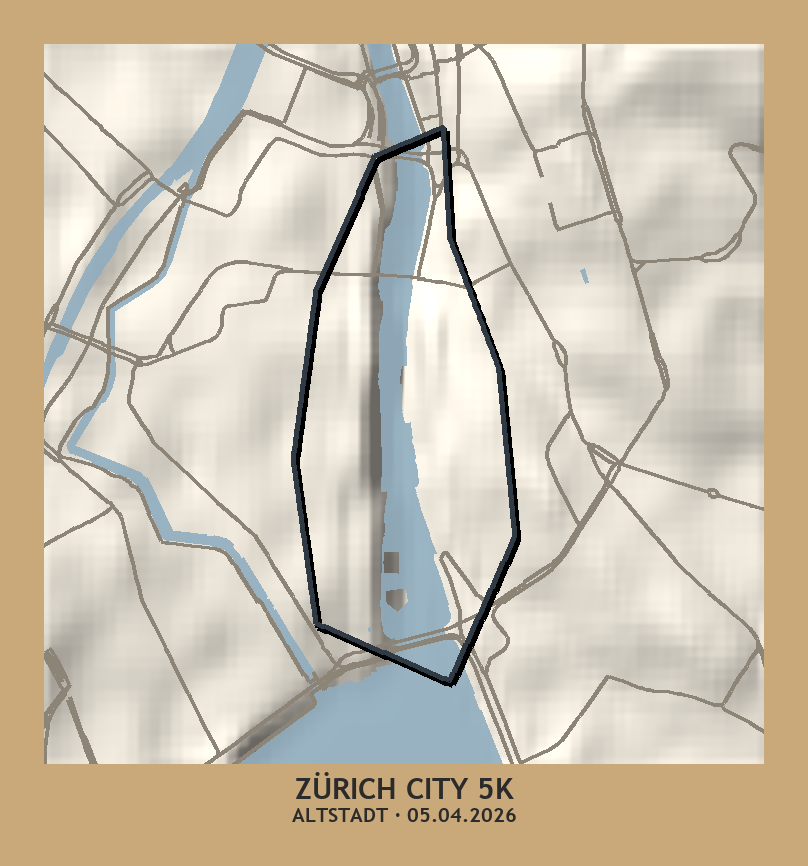<figcaption>Zürich city 5K · 8.5 m/mm</figcaption></figure></div></section>
<section id="japandi" class="theme"><div class="theme-head"><h2>Japandi — clay and charcoal</h2><div class="meta"><span>Relief <b>4 slots</b></span><span>Draws <b>main roads · streets · trails</b></span></div></div><p>Warm clay land and stone-blue water inside a charcoal frame; terracotta route.</p><div class="chips"><span class="chip"><i style="background:#3A3A38"></i>frame #3A3A38</span><span class="chip"><i style="background:#EAE3D6"></i>caption #EAE3D6</span><span class="chip"><i style="background:#D9C9B3"></i>land #D9C9B3</span><span class="chip"><i style="background:#7A9AA6"></i>water #7A9AA6</span><span class="chip"><i style="background:#B9B0A2"></i>high band #B9B0A2</span><span class="chip"><i style="background:#5B5651"></i>streets & trails #5B5651</span><span class="chip"><i style="background:#B5543A"></i>route #B5543A</span></div><div class="trio"><figure>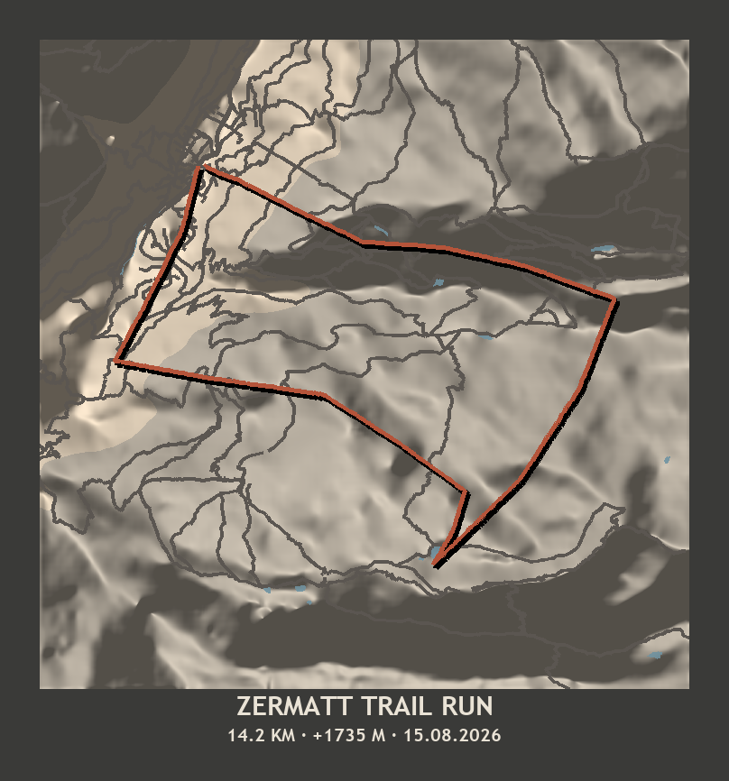<figcaption>Zermatt trail run · 33 m/mm</figcaption></figure><figure>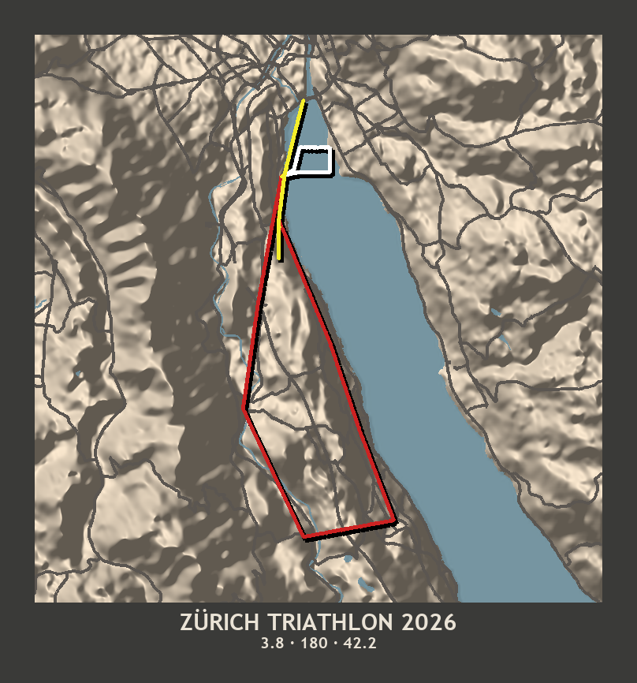<figcaption>Zürich triathlon · 58 m/mm</figcaption></figure><figure>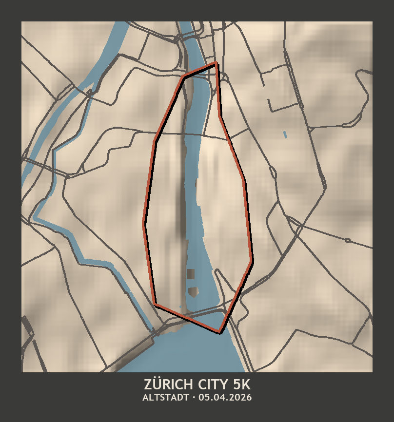<figcaption>Zürich city 5K · 8.5 m/mm</figcaption></figure></div></section>
<section id="bauhaus" class="theme"><div class="theme-head"><h2>Bauhaus — primaries on white</h2><div class="meta"><span>Relief <b>3 slots</b></span><span>Draws <b>main roads · streets · buildings</b></span></div></div><p>White land, cobalt water, black buildings and streets, a vermilion route; triathlon legs white, red and yellow. No band.</p><div class="chips"><span class="chip"><i style="background:#111111"></i>frame #111111</span><span class="chip"><i style="background:#FFFFFF"></i>caption #FFFFFF</span><span class="chip"><i style="background:#F2F0EB"></i>land #F2F0EB</span><span class="chip"><i style="background:#1F4FBF"></i>water #1F4FBF</span><span class="chip"><i style="background:#111111"></i>streets & trails #111111</span><span class="chip"><i style="background:#E63312"></i>route #E63312</span></div><div class="trio"><figure>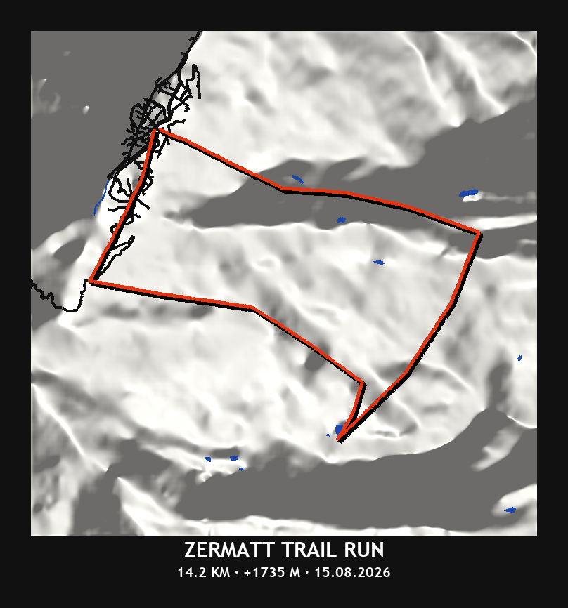<figcaption>Zermatt trail run · 33 m/mm</figcaption></figure><figure>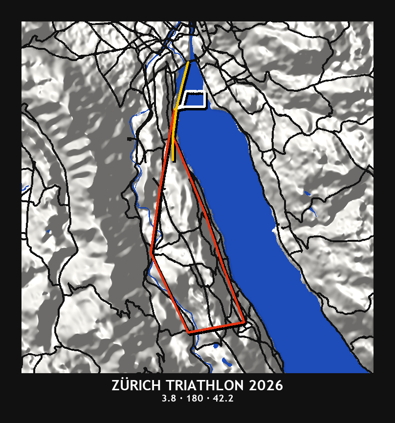<figcaption>Zürich triathlon · 58 m/mm</figcaption></figure><figure>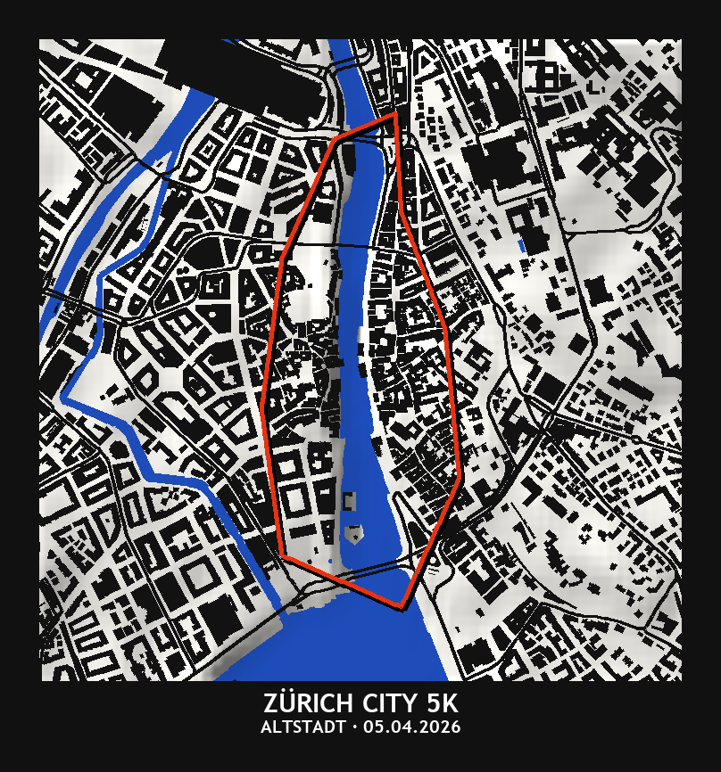<figcaption>Zürich city 5K · 8.5 m/mm</figcaption></figure></div></section>
<section id="concrete" class="theme"><div class="theme-head"><h2>Brutalist — raw concrete</h2><div class="meta"><span>Relief <b>4 slots</b></span><span>Draws <b>main roads · streets · buildings</b></span></div></div><p>Concrete greys in three tones, a slate lake and a safety-orange route. The frame is concrete too.</p><div class="chips"><span class="chip"><i style="background:#6E6E6A"></i>frame #6E6E6A</span><span class="chip"><i style="background:#F4F4F2"></i>caption #F4F4F2</span><span class="chip"><i style="background:#B8B6B0"></i>land #B8B6B0</span><span class="chip"><i style="background:#52606D"></i>water #52606D</span><span class="chip"><i style="background:#D5D3CD"></i>high band #D5D3CD</span><span class="chip"><i style="background:#3C3C3A"></i>streets & trails #3C3C3A</span><span class="chip"><i style="background:#FF4F1F"></i>route #FF4F1F</span></div><div class="trio"><figure>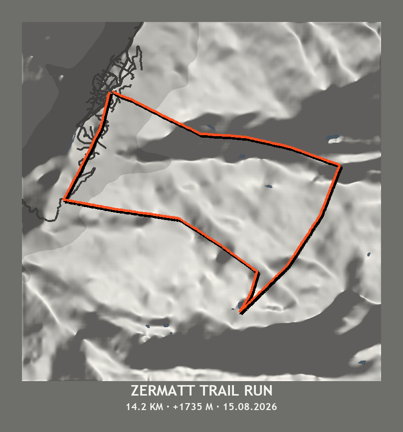<figcaption>Zermatt trail run · 33 m/mm</figcaption></figure><figure>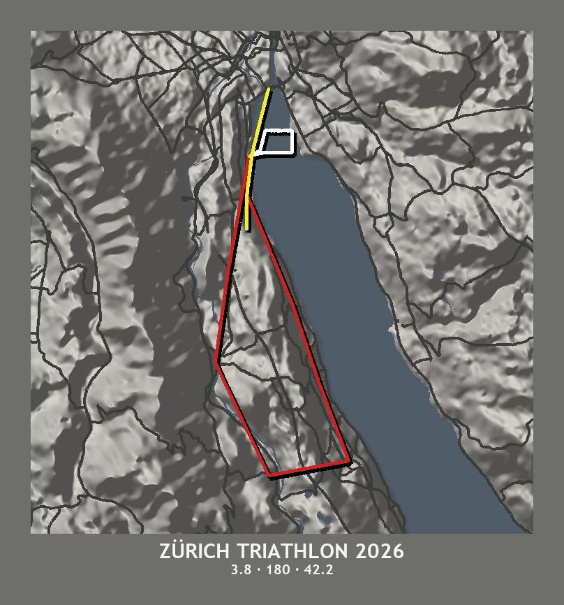<figcaption>Zürich triathlon · 58 m/mm</figcaption></figure><figure>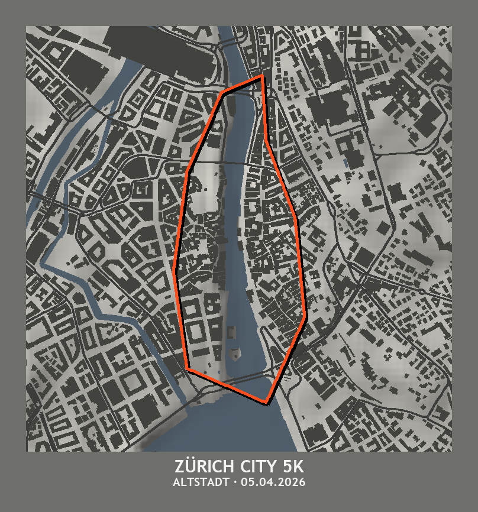<figcaption>Zürich city 5K · 8.5 m/mm</figcaption></figure></div></section>
<section id="gallery" class="theme"><div class="theme-head"><h2>Gallery white — sculpture relief</h2><div class="meta"><span>Relief <b>2 slots</b></span><span>Draws <b>main roads</b></span></div></div><p>A white sculpture: land and water both near-white, no band, no detail, the route in black. Two filaments on the relief.</p><div class="chips"><span class="chip"><i style="background:#F7F7F5"></i>frame #F7F7F5</span><span class="chip"><i style="background:#1A1A1A"></i>caption #1A1A1A</span><span class="chip"><i style="background:#FFFFFF"></i>land #FFFFFF</span><span class="chip"><i style="background:#E6E6E3"></i>water #E6E6E3</span><span class="chip"><i style="background:#1A1A1A"></i>route #1A1A1A</span></div><div class="trio"><figure>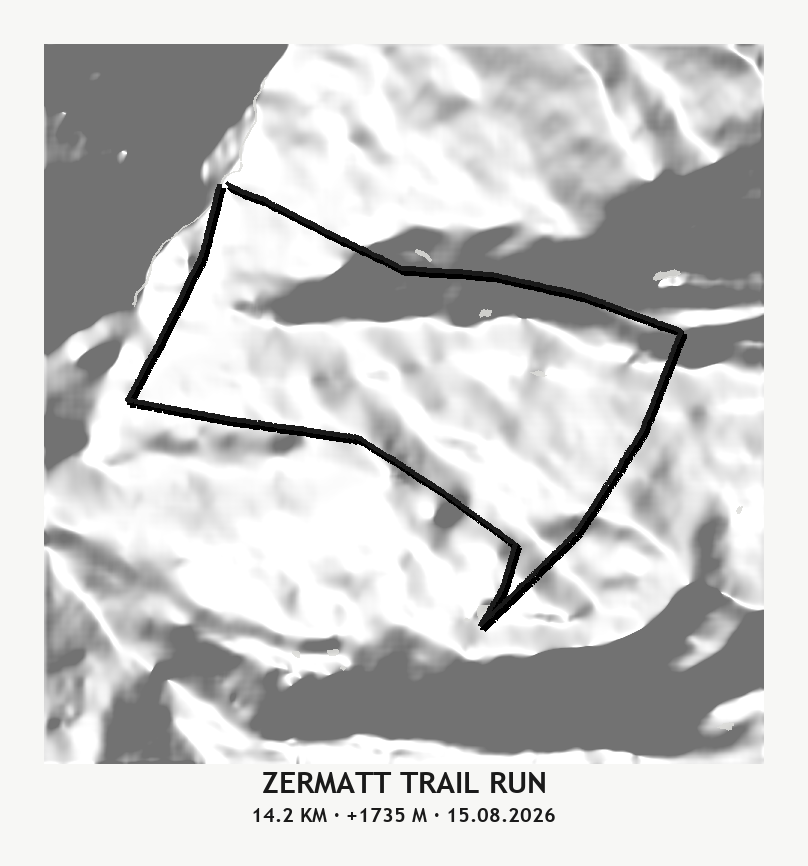<figcaption>Zermatt trail run · 33 m/mm</figcaption></figure><figure>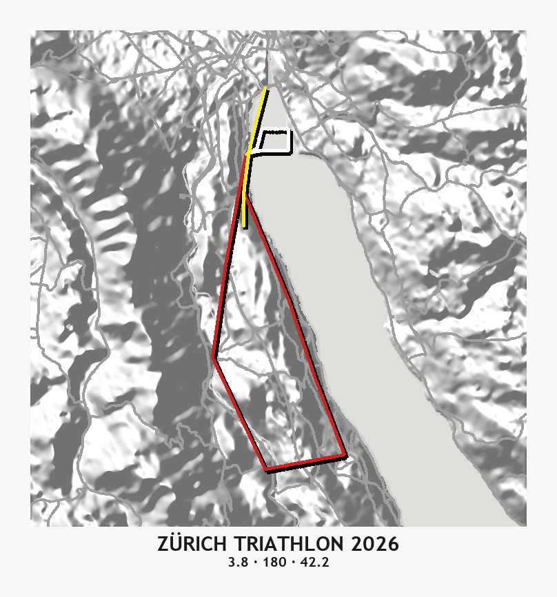<figcaption>Zürich triathlon · 58 m/mm</figcaption></figure><figure>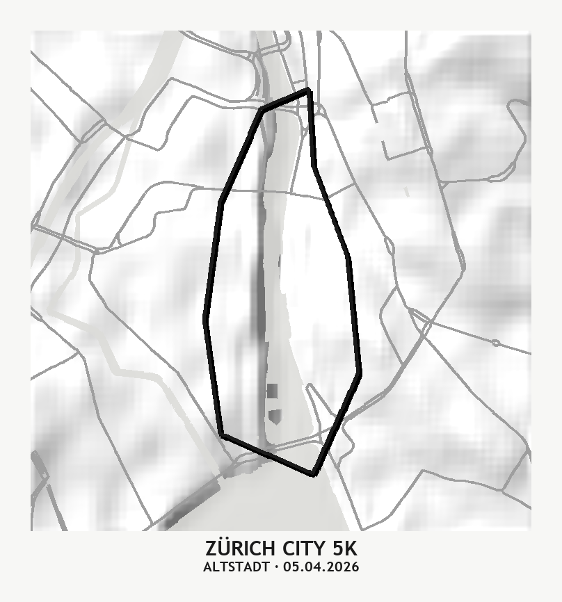<figcaption>Zürich city 5K · 8.5 m/mm</figcaption></figure></div></section>
<section id="chalk" class="theme"><div class="theme-head"><h2>Chalk and charcoal</h2><div class="meta"><span>Relief <b>4 slots</b></span><span>Draws <b>main roads · streets · trails</b></span></div></div><p>Chalk-white land with charcoal streets and a charcoal route; legs in three greys. A drawing more than a map.</p><div class="chips"><span class="chip"><i style="background:#2B2B2B"></i>frame #2B2B2B</span><span class="chip"><i style="background:#F2F2F0"></i>caption #F2F2F0</span><span class="chip"><i style="background:#F2F2F0"></i>land #F2F2F0</span><span class="chip"><i style="background:#BFC7CC"></i>water #BFC7CC</span><span class="chip"><i style="background:#DADAD6"></i>high band #DADAD6</span><span class="chip"><i style="background:#2B2B2B"></i>streets & trails #2B2B2B</span><span class="chip"><i style="background:#2B2B2B"></i>route #2B2B2B</span></div><div class="trio"><figure>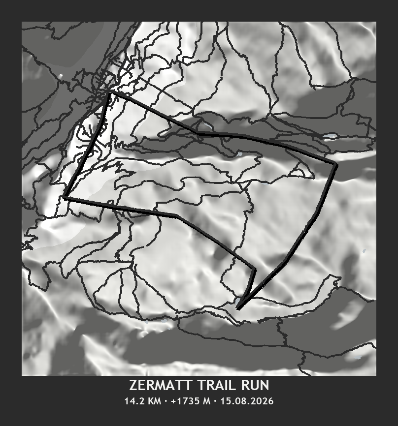<figcaption>Zermatt trail run · 33 m/mm</figcaption></figure><figure>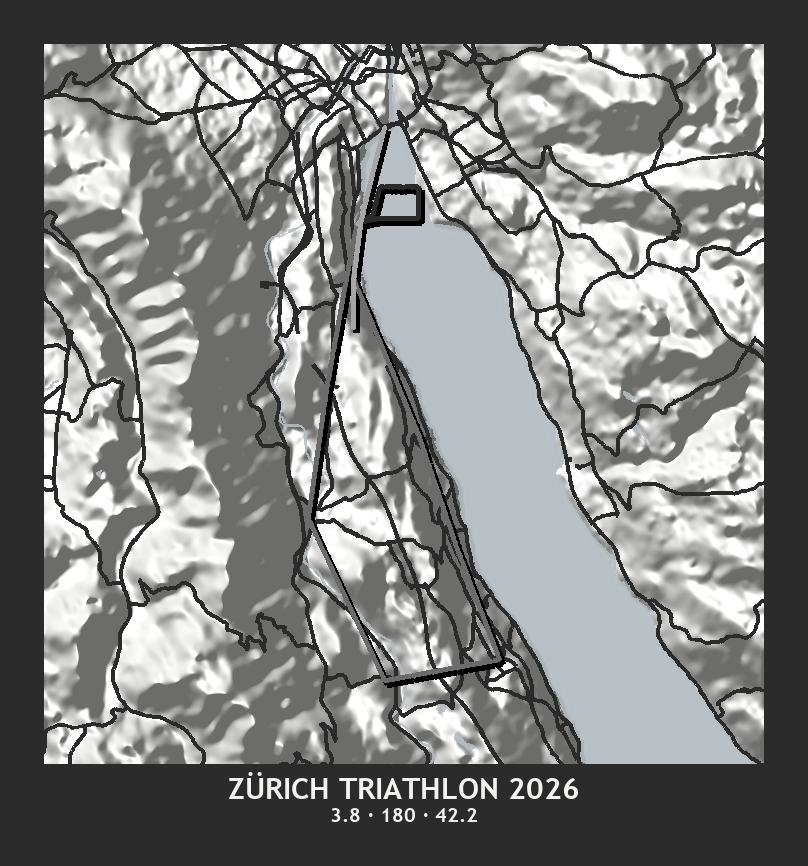<figcaption>Zürich triathlon · 58 m/mm</figcaption></figure><figure><figcaption>Zürich city 5K · 8.5 m/mm</figcaption></figure></div></section>
<section class="theme" id="industrial_design"><div class="eyebrow">Industrial design</div><p>Material palettes borrowed from product design: greige housings with one signal colour, blackened steel, copper gone green, plywood and safety yellow.</p></section>
<section id="rams" class="theme"><div class="theme-head"><h2>Greige and signal orange</h2><div class="meta"><span>Relief <b>4 slots</b></span><span>Draws <b>main roads · streets · rail</b></span></div></div><p>Greige housing, slate-blue water, a dark graphite detail line and one signal-orange route, the way a good radio has one orange knob.</p><div class="chips"><span class="chip"><i style="background:#D7D2C8"></i>frame #D7D2C8</span><span class="chip"><i style="background:#222222"></i>caption #222222</span><span class="chip"><i style="background:#E8E4DC"></i>land #E8E4DC</span><span class="chip"><i style="background:#8FA3AD"></i>water #8FA3AD</span><span class="chip"><i style="background:#C8C3B9"></i>high band #C8C3B9</span><span class="chip"><i style="background:#4A4845"></i>streets & trails #4A4845</span><span class="chip"><i style="background:#F26419"></i>route #F26419</span></div><div class="trio"><figure><figcaption>Zermatt trail run · 33 m/mm</figcaption></figure><figure><figcaption>Zürich triathlon · 58 m/mm</figcaption></figure><figure><figcaption>Zürich city 5K · 8.5 m/mm</figcaption></figure></div></section>
<section id="steel_brass" class="theme"><div class="theme-head"><h2>Blackened steel and brass</h2><div class="meta"><span>Relief <b>4 slots</b></span><span>Draws <b>main roads · streets</b></span></div></div><p>Gunmetal land, a near-black lake, a lighter steel band and brass for caption and route.</p><div class="chips"><span class="chip"><i style="background:#1C1C1C"></i>frame #1C1C1C</span><span class="chip"><i style="background:#C9A961"></i>caption #C9A961</span><span class="chip"><i style="background:#3B3D40"></i>land #3B3D40</span><span class="chip"><i style="background:#23303A"></i>water #23303A</span><span class="chip"><i style="background:#6B6E72"></i>high band #6B6E72</span><span class="chip"><i style="background:#8A8D91"></i>streets & trails #8A8D91</span><span class="chip"><i style="background:#C9A961"></i>route #C9A961</span></div><div class="trio"><figure><figcaption>Zermatt trail run · 33 m/mm</figcaption></figure><figure><figcaption>Zürich triathlon · 58 m/mm</figcaption></figure><figure><figcaption>Zürich city 5K · 8.5 m/mm</figcaption></figure></div></section>
<section id="verdigris" class="theme"><div class="theme-head"><h2>Copper and verdigris</h2><div class="meta"><span>Relief <b>4 slots</b></span><span>Draws <b>main roads · streets · trails</b></span></div></div><p>Patinated copper land, deep teal water, pale verdigris band, copper trails and a bright copper route.</p><div class="chips"><span class="chip"><i style="background:#2E2A26"></i>frame #2E2A26</span><span class="chip"><i style="background:#E6D2B8"></i>caption #E6D2B8</span><span class="chip"><i style="background:#4F8A7B"></i>land #4F8A7B</span><span class="chip"><i style="background:#2C5F6E"></i>water #2C5F6E</span><span class="chip"><i style="background:#9FB9AE"></i>high band #9FB9AE</span><span class="chip"><i style="background:#B87333"></i>streets & trails #B87333</span><span class="chip"><i style="background:#E07A3F"></i>route #E07A3F</span></div><div class="trio"><figure><figcaption>Zermatt trail run · 33 m/mm</figcaption></figure><figure><figcaption>Zürich triathlon · 58 m/mm</figcaption></figure><figure><figcaption>Zürich city 5K · 8.5 m/mm</figcaption></figure></div></section>
<section id="workshop" class="theme"><div class="theme-head"><h2>Workshop — plywood and safety yellow</h2><div class="meta"><span>Relief <b>4 slots</b></span><span>Draws <b>main roads · streets · rail · buildings</b></span></div></div><p>Plywood frame, bleached-wood land, a slate-blue lake, black detail and a safety-yellow route.</p><div class="chips"><span class="chip"><i style="background:#D9B77E"></i>frame #D9B77E</span><span class="chip"><i style="background:#1E1E1E"></i>caption #1E1E1E</span><span class="chip"><i style="background:#E7DCC3"></i>land #E7DCC3</span><span class="chip"><i style="background:#6E8FA6"></i>water #6E8FA6</span><span class="chip"><i style="background:#C9BFA7"></i>high band #C9BFA7</span><span class="chip"><i style="background:#2B2B2B"></i>streets & trails #2B2B2B</span><span class="chip"><i style="background:#FFC400"></i>route #FFC400</span></div><div class="trio"><figure><figcaption>Zermatt trail run · 33 m/mm</figcaption></figure><figure><figcaption>Zürich triathlon · 58 m/mm</figcaption></figure><figure><figcaption>Zürich city 5K · 8.5 m/mm</figcaption></figure></div></section>
<section class="theme" id="nature"><div class="eyebrow">Nature</div><p>Landscapes as pigment: sandstone, turquoise water and coral, golden larches above the tree line, glacier ice, moss, the blue hour, basalt and ember.</p></section>
<section id="sandstone" class="theme"><div class="theme-head"><h2>Desert sandstone</h2><div class="meta"><span>Relief <b>4 slots</b></span><span>Draws <b>main roads · streets · trails</b></span></div></div><p>Sand land, red-rock band above 2000 m, a cool blue lake and a deep-blue route against the warm ground.</p><div class="chips"><span class="chip"><i style="background:#5A3E2B"></i>frame #5A3E2B</span><span class="chip"><i style="background:#F5E9D6"></i>caption #F5E9D6</span><span class="chip"><i style="background:#E2B98A"></i>land #E2B98A</span><span class="chip"><i style="background:#4F8FB0"></i>water #4F8FB0</span><span class="chip"><i style="background:#A96F4B"></i>high band #A96F4B</span><span class="chip"><i style="background:#7A5236"></i>streets & trails #7A5236</span><span class="chip"><i style="background:#1F3A5F"></i>route #1F3A5F</span></div><div class="trio"><figure><figcaption>Zermatt trail run · 33 m/mm</figcaption></figure><figure><figcaption>Zürich triathlon · 58 m/mm</figcaption></figure><figure><figcaption>Zürich city 5K · 8.5 m/mm</figcaption></figure></div></section>
<section id="ocean" class="theme"><div class="theme-head"><h2>Ocean and coral</h2><div class="meta"><span>Relief <b>4 slots</b></span><span>Draws <b>main roads · streets</b></span></div></div><p>Deep-teal land with turquoise water and a foam-white band, coral route. Made for lake and coastal swims.</p><div class="chips"><span class="chip"><i style="background:#0B2A3A"></i>frame #0B2A3A</span><span class="chip"><i style="background:#F3F6F7"></i>caption #F3F6F7</span><span class="chip"><i style="background:#1E5F74"></i>land #1E5F74</span><span class="chip"><i style="background:#58C1D3"></i>water #58C1D3</span><span class="chip"><i style="background:#E4E9EC"></i>high band #E4E9EC</span><span class="chip"><i style="background:#0B2A3A"></i>streets & trails #0B2A3A</span><span class="chip"><i style="background:#FF6F61"></i>route #FF6F61</span></div><div class="trio"><figure><figcaption>Zermatt trail run · 33 m/mm</figcaption></figure><figure><figcaption>Zürich triathlon · 58 m/mm</figcaption></figure><figure><figcaption>Zürich city 5K · 8.5 m/mm</figcaption></figure></div></section>
<section id="larch" class="theme"><div class="theme-head"><h2>Autumn larch</h2><div class="meta"><span>Relief <b>4 slots</b></span><span>Draws <b>main roads · trails</b></span></div></div><p>Olive moss below, golden larch above the tree line, dark trails and a brick-red route. October in the Engadin.</p><div class="chips"><span class="chip"><i style="background:#2E2419"></i>frame #2E2419</span><span class="chip"><i style="background:#F3E5C8"></i>caption #F3E5C8</span><span class="chip"><i style="background:#6B6F3F"></i>land #6B6F3F</span><span class="chip"><i style="background:#4A7C9B"></i>water #4A7C9B</span><span class="chip"><i style="background:#D9A441"></i>high band #D9A441</span><span class="chip"><i style="background:#3C2F23"></i>streets & trails #3C2F23</span><span class="chip"><i style="background:#C73E1D"></i>route #C73E1D</span></div><div class="trio"><figure><figcaption>Zermatt trail run · 33 m/mm</figcaption></figure><figure><figcaption>Zürich triathlon · 58 m/mm</figcaption></figure><figure><figcaption>Zürich city 5K · 8.5 m/mm</figcaption></figure></div></section>
<section id="glacier" class="theme"><div class="theme-head"><h2>Glacier ice</h2><div class="meta"><span>Relief <b>4 slots</b></span><span>Draws <b>main roads · streets · trails</b></span></div></div><p>Ice-blue land and a white band, a cool lake, slate trails and a hot red route. Pale frame.</p><div class="chips"><span class="chip"><i style="background:#DDE7EE"></i>frame #DDE7EE</span><span class="chip"><i style="background:#0E2A3F"></i>caption #0E2A3F</span><span class="chip"><i style="background:#CFE0EA"></i>land #CFE0EA</span><span class="chip"><i style="background:#4A8FB8"></i>water #4A8FB8</span><span class="chip"><i style="background:#F6FBFD"></i>high band #F6FBFD</span><span class="chip"><i style="background:#7E96A6"></i>streets & trails #7E96A6</span><span class="chip"><i style="background:#FF3B30"></i>route #FF3B30</span></div><div class="trio"><figure><figcaption>Zermatt trail run · 33 m/mm</figcaption></figure><figure><figcaption>Zürich triathlon · 58 m/mm</figcaption></figure><figure><figcaption>Zürich city 5K · 8.5 m/mm</figcaption></figure></div></section>
<section id="moss_slate" class="theme"><div class="theme-head"><h2>Moss and slate</h2><div class="meta"><span>Relief <b>4 slots</b></span><span>Draws <b>main roads · streets · trails</b></span></div></div><p>Moss land, slate band, lichen-pale streets and a pale yellow route.</p><div class="chips"><span class="chip"><i style="background:#2F3A34"></i>frame #2F3A34</span><span class="chip"><i style="background:#DDE6D9"></i>caption #DDE6D9</span><span class="chip"><i style="background:#5C7A5A"></i>land #5C7A5A</span><span class="chip"><i style="background:#3F6B86"></i>water #3F6B86</span><span class="chip"><i style="background:#7E8686"></i>high band #7E8686</span><span class="chip"><i style="background:#B9C0B4"></i>streets & trails #B9C0B4</span><span class="chip"><i style="background:#F2E394"></i>route #F2E394</span></div><div class="trio"><figure><figcaption>Zermatt trail run · 33 m/mm</figcaption></figure><figure><figcaption>Zürich triathlon · 58 m/mm</figcaption></figure><figure><figcaption>Zürich city 5K · 8.5 m/mm</figcaption></figure></div></section>
<section id="blue_hour" class="theme"><div class="theme-head"><h2>Blue hour — sodium lights</h2><div class="meta"><span>Relief <b>4 slots</b></span><span>Draws <b>main roads · streets</b></span></div></div><p>Dusk-blue land, near-black water, a lighter blue band and sodium-amber route and caption.</p><div class="chips"><span class="chip"><i style="background:#141A2E"></i>frame #141A2E</span><span class="chip"><i style="background:#F7D5A8"></i>caption #F7D5A8</span><span class="chip"><i style="background:#2B3A5C"></i>land #2B3A5C</span><span class="chip"><i style="background:#0F1E3A"></i>water #0F1E3A</span><span class="chip"><i style="background:#8B9BC4"></i>high band #8B9BC4</span><span class="chip"><i style="background:#52648C"></i>streets & trails #52648C</span><span class="chip"><i style="background:#F7A541"></i>route #F7A541</span></div><div class="trio"><figure><figcaption>Zermatt trail run · 33 m/mm</figcaption></figure><figure><figcaption>Zürich triathlon · 58 m/mm</figcaption></figure><figure><figcaption>Zürich city 5K · 8.5 m/mm</figcaption></figure></div></section>
<section id="volcanic" class="theme"><div class="theme-head"><h2>Volcanic — basalt and ember</h2><div class="meta"><span>Relief <b>4 slots</b></span><span>Draws <b>main roads · streets · trails</b></span></div></div><p>Basalt land, ash band and an ember route; the caption in warm glow on a black frame.</p><div class="chips"><span class="chip"><i style="background:#0D0D0D"></i>frame #0D0D0D</span><span class="chip"><i style="background:#FFB37A"></i>caption #FFB37A</span><span class="chip"><i style="background:#262323"></i>land #262323</span><span class="chip"><i style="background:#3A4A55"></i>water #3A4A55</span><span class="chip"><i style="background:#5E5957"></i>high band #5E5957</span><span class="chip"><i style="background:#8A7F79"></i>streets & trails #8A7F79</span><span class="chip"><i style="background:#FF4D00"></i>route #FF4D00</span></div><div class="trio"><figure><figcaption>Zermatt trail run · 33 m/mm</figcaption></figure><figure><figcaption>Zürich triathlon · 58 m/mm</figcaption></figure><figure><figcaption>Zürich city 5K · 8.5 m/mm</figcaption></figure></div></section>
<section class="theme" id="running_culture"><div class="eyebrow">Running culture</div><p>The red oxide of a 400 m track with cream lane lines, volt race kit on black, seventies stripes, reflective night gear, a bronze finisher's medal.</p></section>
<section id="track" class="theme"><div class="theme-head"><h2>Running track — oxide red</h2><div class="meta"><span>Relief <b>3 slots</b></span><span>Draws <b>main roads · streets · buildings</b></span></div></div><p>Oxide-red land like a 400 m track, cream lane-line streets and buildings, a white route; legs white, cream and yellow. No band.</p><div class="chips"><span class="chip"><i style="background:#1A1A1A"></i>frame #1A1A1A</span><span class="chip"><i style="background:#FFFFFF"></i>caption #FFFFFF</span><span class="chip"><i style="background:#B33A2E"></i>land #B33A2E</span><span class="chip"><i style="background:#2C6FAA"></i>water #2C6FAA</span><span class="chip"><i style="background:#F2E7D5"></i>streets & trails #F2E7D5</span><span class="chip"><i style="background:#FFFFFF"></i>route #FFFFFF</span></div><div class="trio"><figure><figcaption>Zermatt trail run · 33 m/mm</figcaption></figure><figure><figcaption>Zürich triathlon · 58 m/mm</figcaption></figure><figure><figcaption>Zürich city 5K · 8.5 m/mm</figcaption></figure></div></section>
<section id="neon_kit" class="theme"><div class="theme-head"><h2>Race kit — volt on black</h2><div class="meta"><span>Relief <b>3 slots</b></span><span>Draws <b>main roads · streets</b></span></div></div><p>Black land and frame, a volt-yellow route and caption; legs magenta, volt and cyan.</p><div class="chips"><span class="chip"><i style="background:#0A0A0A"></i>frame #0A0A0A</span><span class="chip"><i style="background:#CCFF00"></i>caption #CCFF00</span><span class="chip"><i style="background:#171717"></i>land #171717</span><span class="chip"><i style="background:#1C2B3A"></i>water #1C2B3A</span><span class="chip"><i style="background:#3A3A3A"></i>streets & trails #3A3A3A</span><span class="chip"><i style="background:#CCFF00"></i>route #CCFF00</span></div><div class="trio"><figure><figcaption>Zermatt trail run · 33 m/mm</figcaption></figure><figure><figcaption>Zürich triathlon · 58 m/mm</figcaption></figure><figure><figcaption>Zürich city 5K · 8.5 m/mm</figcaption></figure></div></section>
<section id="retro_70s" class="theme"><div class="theme-head"><h2>Retro seventies stripes</h2><div class="meta"><span>Relief <b>4 slots</b></span><span>Draws <b>main roads · streets · trails</b></span></div></div><p>Cream frame, sand land, a mustard band and a rust detail line; the three legs run red, orange and green like seventies stripes.</p><div class="chips"><span class="chip"><i style="background:#F4E3C1"></i>frame #F4E3C1</span><span class="chip"><i style="background:#2B2118"></i>caption #2B2118</span><span class="chip"><i style="background:#E9D8B4"></i>land #E9D8B4</span><span class="chip"><i style="background:#4C86A8"></i>water #4C86A8</span><span class="chip"><i style="background:#C9A86A"></i>high band #C9A86A</span><span class="chip"><i style="background:#A6553D"></i>streets & trails #A6553D</span><span class="chip"><i style="background:#C8102E"></i>route #C8102E</span></div><div class="trio"><figure><figcaption>Zermatt trail run · 33 m/mm</figcaption></figure><figure><figcaption>Zürich triathlon · 58 m/mm</figcaption></figure><figure><figcaption>Zürich city 5K · 8.5 m/mm</figcaption></figure></div></section>
<section id="night_run" class="theme"><div class="theme-head"><h2>Night run — reflective silver</h2><div class="meta"><span>Relief <b>3 slots</b></span><span>Draws <b>main roads · streets</b></span></div></div><p>Near-black land, reflective-silver streets and a hi-vis yellow route.</p><div class="chips"><span class="chip"><i style="background:#0F1115"></i>frame #0F1115</span><span class="chip"><i style="background:#E8E8E8"></i>caption #E8E8E8</span><span class="chip"><i style="background:#1B1F26"></i>land #1B1F26</span><span class="chip"><i style="background:#0B2540"></i>water #0B2540</span><span class="chip"><i style="background:#C0C0C0"></i>streets & trails #C0C0C0</span><span class="chip"><i style="background:#FFD60A"></i>route #FFD60A</span></div><div class="trio"><figure><figcaption>Zermatt trail run · 33 m/mm</figcaption></figure><figure><figcaption>Zürich triathlon · 58 m/mm</figcaption></figure><figure><figcaption>Zürich city 5K · 8.5 m/mm</figcaption></figure></div></section>
<section id="medal" class="theme"><div class="theme-head"><h2>Finisher medal — bronze on navy</h2><div class="meta"><span>Relief <b>4 slots</b></span><span>Draws <b>main roads · streets</b></span></div></div><p>Navy land and frame, a steel-blue band and bronze caption and route.</p><div class="chips"><span class="chip"><i style="background:#0F2238"></i>frame #0F2238</span><span class="chip"><i style="background:#CD7F32"></i>caption #CD7F32</span><span class="chip"><i style="background:#16304D"></i>land #16304D</span><span class="chip"><i style="background:#0A1A2E"></i>water #0A1A2E</span><span class="chip"><i style="background:#345E85"></i>high band #345E85</span><span class="chip"><i style="background:#5C7FA3"></i>streets & trails #5C7FA3</span><span class="chip"><i style="background:#CD7F32"></i>route #CD7F32</span></div><div class="trio"><figure><figcaption>Zermatt trail run · 33 m/mm</figcaption></figure><figure><figcaption>Zürich triathlon · 58 m/mm</figcaption></figure><figure><figcaption>Zürich city 5K · 8.5 m/mm</figcaption></figure></div></section>
<section class="theme"><h2>Form ideas for a later round</h2><p>These need geometry changes, not colours, so they are not in this proposal: a frameless relief that floats on hidden standoffs; a frame with a soft 6 mm radius; a plywood-look frame printed in wood-filled PLA; the caption cut through the frame as a stencil instead of raised; a thin brass-coloured inlay line around the relief opening.</p></section>

<section class="theme">
  <h2>Events considered and where they land</h2>
  <dl>
    <dt>Marathon majors</dt><dd>Boston blue/yellow, New York blue/orange, London, Chicago and Tokyo red: all use the City marathon relief with the route wall in the event colour, chosen per order from the path-colour list.</dd>
    <dt>Obstacle and fitness races</dt><dd>Spartan red/black fits the Triathlon theme; a yellow-on-black race fits Dark mode with a yellow accent.</dd>
    <dt>Open-water swims, winter trail</dt><dd>Alpine winter blues and slate.</dd>
    <dt>Tracker apps</dt><dd>Orange, green or red accents on the dark terrain; one table line each if a customer asks.</dd>
    <dt>Four colours on the relief</dt><dd>Alpine hiking, Alpine winter, Grand tour, Trail and Forest use a fourth AMS slot for streets and trails. The prime tower gets deeper; the plan measures it in Orca before any of these is offered.</dd>
  </dl>
</section>
</main>
